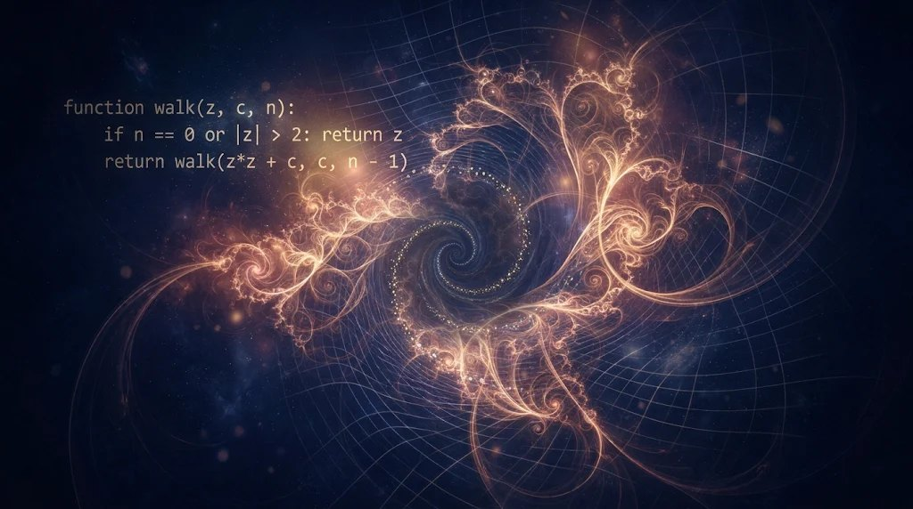
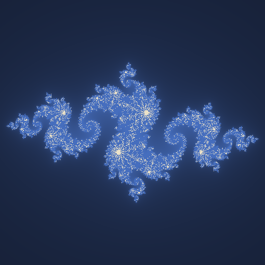
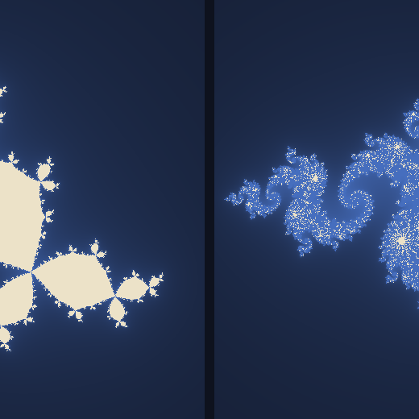

概要
起業家の歩みをジュリア集合の式に当てはめる、と聞くと、こじつけに見えるかもしれません。このページを読む効果について、pjdhiro はこう見ています。
pjdhiro の見方：こじつけのような論であることは否定しません。ジュリア集合に当てはめようとしている、というのは、むしろその通りで、それによって発散思考をしたい。ゴールでなく、次の足場としての発散です。
工事中対話の途中で立った問いを置いた、工事中のページです。式への当てはめは、対話で pjdhiro と Claude が共有した仮のもので、論証ではありません。
ここで解説するのは、pjdhiro の一つの見立てと、そこから立った問い、その問いに近寄る仮説です。見立ては、次のものです。
pjdhiro の見方：漸化式は起業家のよう。Loveと呼びたいものは重力のようにドリフトする。それはジュリア集合の漸化式のようだ。
起業家は、一歩の結果を次の一歩の出発にして進んでいるのではないか。そうなら、前の値から次の値を決める漸化式と、同じ形です。その一歩は、自分で自分を回すような一歩かもしれません。pjdhiro は、野中郁次郎の知識創造のように、起業家もスパイラルを描いて進むのかもしれない、と見ています。もしも、自己が一つでないとすれば、二乗は、重なった自己と自己が掛け合わさり、どちらか一つには無いものを次の一歩に生む、創造的な協働のような一歩なのかもしれません。周りからは、「人に会って決める」のような単純なくり返しに見えます。けれども、それは認知できる側だけを切り取った見え方で、一歩には、言葉にできない、認知し得ないものも含まれているのではないか。その一歩ごとに、Love と呼びたいものが、重力のように、起業家の歩みを同じ向きへ同じだけ引き寄せているのかもしれません。
式に当てると z → z² + c になりそうです。z を起業家の思考・心理・行動（気づきや決定も含み、認知できる面と認知し得ない面を持つ）、z² を自分で自分を回す一歩、c を Love と呼びたいものの重力と、仮に置きます。これは、ジュリア集合を描く式です。0 から値を前へ打つと、c によっては、一か所に寄る渦になります。そこから遡ると、ジュリア集合の込み入った境目になります。
 詳しく — ジュリア集合とは
詳しく — ジュリア集合とは
ジュリア集合は、z → z² + c のような簡単な式をくり返すと現れる形です。名は、フランスの数学者ガストン・ジュリアにちなみます。


c = −0.8 + 0.16i、右は c = −0.12 + 0.75i。左の c は、0 から打つと遠くへ行く値で、遠くへ行かない点はひとつながりにならず、細かなかけらに散ります。左の淡い点は、計算した回数では遠くへ行かなかった点です。右の淡い色は、くり返しても遠くへ行かない点で、その縁がジュリア集合です。青は遠くへ行く点で、明るいほど、遠くへ行くまでに多くの歩数がかかった点です。どちらも、このページで計算して描きました（計算は Claude）。zもcも、平面の上の一点で表せる数（複素数）です。cを一つ決め、出発点のzを一つ選んで、二乗してcを足す、をくり返します。- 二乗すると、点は、原点から見た角度が二倍になり、原点からの距離が二乗になります（図：二乗を手で動かす）。
cを足すと、毎回、同じ向きに同じだけずれます（章「c は、一歩ごとに同じだけ引き寄せる」）。 - 出発点によって、くり返すうちに限りなく遠くへ行く点と、いつまでも遠くへ行かない点に分かれます。遠くへ行かない点の集まりの縁（境目）が、ジュリア集合です。
- 境目は、ほとんどの
cで、どれほど拡大しても込み入った模様が続きます（章「どの大きさでも同じ形なら、至る所に現れる」）。形はcごとに違い、c = 0のときは円です。 cを平面のどこに置くと境目がひとつながりになるかを塗った地図が、マンデルブロ集合です。このページの図の「c を選ぶ」の黒い形がそれです。その本体の大きなハート形の中にcがあると、0 から打った値は一点に寄ります（章「値を前へ打つと渦になり、遡るとジュリア集合の形になる」）。- 一歩を逆に戻すと、平方根が二つあるので、点は二つに分かれます。遡った点は、境目に集まっていきます。このページは、この遡る向きから見ます（章「ジュリア集合を、逆にたどる」）。
出典：J. Milnor (1990) "Dynamics in One Complex Variable: Introductory Lectures"（arXiv の本文で照合済）。くり返しても遠くへ行かない点の集まり（充填ジュリア集合）の縁がジュリア集合であることは、§17 の補題 17.1（p.17-1）。マンデルブロ集合の定め（0 から打った値が遠くへ行かない c の集まりで、そのとき形がひとつながりになる）は、付録 F（p.F-1）。
この見立てから、次の問いが立ちました。
pjdhiro の問い：ジュリア集合のような何かが、神・愛・美のポテンシャルなのではないか。
ここでのポテンシャルは、pjdhiro の言葉では「場と呼びたいような、可能性」です。
- 第一部 漸化式は、起業家のよう：決定ツリーとの対比で見る起業家の進み方（深さ優先探索）、漸化式とは何か、
zは起業家の思考・心理・行動、z²は自分で自分を回す一歩 - 第二部 Love と呼びたいものは、重力のようにドリフトする：
cは Love と呼びたいものの重力 - 第三部 それは、ジュリア集合の漸化式のようだ：前へ打つと渦、遡るとジュリア集合
- 第四部 起業家を駆るものは、ジュリア集合のようなポテンシャルか：このページの問いと、一旦の仮説
- 第五部 美から近寄る、四段の仮説：美・神・愛と、起業家のエネルギー
- 第六部 仮説として置いたもの：式の所ごとに置いた仮説と、触れていた論
- 巻末：原典を読む順
第一部
漸化式は、起業家のよう
意思決定は、決定ツリーのように進む、と思われていないか
見立ての一つ目は、「漸化式は起業家のよう」です。この見立ては、意思決定がどう進むと思われがちか、との対比から出てきました。
意思決定は、決定ツリーのように進むものだ、と見られることがあります。それが正しい進め方だと受け取っている人も、少なくないのではないでしょうか。決定ツリーでは、分かれ道ごとに、選べる道を並べ、それぞれの先で何が起きそうかを見込んで、良さそうな一本を選ぶ。選んだ先でまた分かれ道があり、また選ぶ。決定の連続で、そのたびに二つ（またはいくつか）から選び、選んだ結果をまとめて次へ進む、という進み方です。
経営学のリアルオプションの考え方も、この形をしています。投資を、先で続ける・やめる・広げる、を選べる権利（オプション）と見て、分かれ道の木の上で、その値打ちを見積もります。
経営学で意思決定を学んだ人には、サイモンの限定合理性がなじみ深いと思います。サイモンも、生き物が動き回る場を、迷路のような分かれ道の系として描きました（1956）。分かれ目の一つ一つが選ぶ所で、生き物は数手先までしか見えません。だから、いちばん良い道を探しきれず、十分に満たす道を選ぶ（満足化）、とします。人は限られた見通しで選ぶ、と考えを改めても、分かれ道の木の上で一つずつ選んでいく、という絵は残っています。
先行研究 — サイモンの迷路と、リアルオプション
サイモンは、1956 年の論文で、生き物の生きる場を、続いた面としてでなく、迷路のような分かれ道の系として描くと都合がよい、と書きました。分かれ目の一つ一つが選ぶ点で、枝を一つ選んで次の分かれ目まで進むことを「一手」と呼びます。生き物は数手先まで見え、その中に食べ物があれば、そこへ行く道を選べます。論文の結びでは、生き物は「最適」な道を見つける感覚も知恵も持たないので、すべての必要をある水準で満たす、満足化の道をたどるしくみを考えた、とまとめます。
リアルオプションについて、サラスバシーとデューは、新しい市場に入ることを、その市場に関わるオプションを買うことと見る論（ミラーとフォルタ、2002）を、ありうる市場の中を探して選ぶ見方の一つとして挙げています（2005）。サラスバシーは 2001 年の論文の推測の一つで、起業家（エフェクチュエーションで進む人）は、長期の計画や正味現在価値の分析を使うことが少なく、使うとしても、リアルオプションの形式ばらない形くらいだろう、と書きました。
原文
- サイモン（節 Perceptual Powers, Storage Capacity, and Survival）："It is convenient to describe the organism's life space not as a continuous surface, but as a branching system of paths, like a maze, each branch point representing a choice point."
- サイモン（結び）："we are concerned only with finding a choice mechanism that will lead it to pursue a 'satisficing' path"
- サラスバシーとデュー p.537："Miller and Folta (2002) take a similar view in 'Option value and entry timing' where they describe a firm's decision to enter a new product or geographic market in terms of purchasing an option on being involved in the market."
- サラスバシー p.261："effectuators are less likely to use long-term planning or net present value (NPV) analyses; instead, they are likely to be focused on the short term and, at most, to use informal versions of real options."
訳は Claude。
出典：Simon (1956) "Rational choice and the structure of the environment", Psychological Review 63(2):129–138（本文照合済。SAGE が公開している再録の PDF。頁は再録のもので、節の名で示した）／Sarasvathy & Dew (2005) "New market creation through transformation", Journal of Evolutionary Economics 15(5):533–565（本文照合済。米海軍大学院の機関リポジトリの写し。p.537）／Sarasvathy (2001) "Causation and Effectuation", Academy of Management Review 26(2):243–263（本文照合済。effectuation.org が置いた誌面の写し。p.261）
pjdhiro が、漸化式と起業家を重ねたのは、このリアルオプションの話題の中でした。
pjdhiro の体験：リアルオプションの視点について話題になったとき、再帰と反復の関数の違いについて「再帰を使いたい時って、構造を繰り返してる時なんです。起業家みたいに」と思いつきで言ったことがある。その時、「商いとは飽きない」という言葉を思い出した
決定ツリーとの違いを、まずサラスバシーの論で見ます。
サラスバシーは、そうでない進み方を見た
起業家の意思決定を調べたサラスバシーは、2001 年の論文で、二つの進み方を分けました。
- コーゼーション：作りたい結果を先に決めて、それを作る手段のほうを選ぶ進み方。
- エフェクチュエーション：手持ちの手段を先に置いて、その手段で作れる結果のほうを選ぶ進み方。
エフェクチュエーションで進む人は、見込みの利益より、失ってもよい額を先に決めて、限られた手段で、できるだけ多くのやり方を試します。うまくいかなければ、目的のほうを作り直します。サラスバシーの例では、カレーの店を開こうとした人が、まず昼の配達を数週間やってみて、喜ばれているのが料理より本人の人柄や話だと分かれば、店でなく、本を書き、話をする方へ進むかもしれません。失敗を避けるより、失敗を扱っていく、という見方です。
のちにサラスバシーとデューは、新しい市場は、あらかじめある「ありうる市場の全体」の中を探して選ぶこと（探索と選択）で生まれるのか、手元の現実を変えていくこと（変換）で生まれるのか、と問い、変換の側から見ました（2005）。人に会い、約束を重ねるうちに、手段も目的も増え、変わっていきます。
決定ツリーのように進む、と見られることのある意思決定とは違う進み方を、サラスバシーは起業家に見た。pjdhiro は、経営学ではこれが Aha だったのではないか、と見ています。
先行研究 — コーゼーションとエフェクチュエーションの原文
原文
- サラスバシー p.245（定義）："Causation processes take a particular effect as given and focus on selecting between means to create that effect. Effectuation processes take a set of means as given and focus on selecting between possible effects that can be created with that set of means."
- サラスバシー p.252（許容できる損失）："Effectuation predetermines how much loss is affordable and focuses on experimenting with as many strategies as possible with the given limited means."
- サラスバシー p.247（カレーの店の例）："after a few weeks of trying to build the lunch business, she might discover that the people who said they enjoyed her food did not really enjoy it"
- サラスバシー p.259（失敗）："The normative aspects of effectuation ... would have to do with the 'management' of failures rather than with their avoidance."
- サラスバシーとデュー p.538："the transformation of current realities into new possibilities rather than search (however bounded or unbounded) and selection within exotic regions of the unknown."
訳は Claude。サラスバシーは、エフェクチュエーションを木や深さ優先探索のたとえでは書いていません。2001 年の論文の図は、手持ちの手段から、作れる結果の一つ一つへ、扇のように矢印が広がる形です（p.253）。
出典：Sarasvathy (2001) "Causation and Effectuation", Academy of Management Review 26(2):243–263（本文照合済。effectuation.org が置いた誌面の写し。pp.245・247・252・253・259）／Sarasvathy & Dew (2005) "New market creation through transformation", Journal of Evolutionary Economics 15(5):533–565（本文照合済。米海軍大学院の機関リポジトリの写し。p.538。手段から人と関わり約束を重ねていく環の図は p.543）
起業家の進み方は、深さ優先探索のように見える
pjdhiro は、起業家のこの進み方を、計算機の深さ優先探索のように見ています。サラスバシーの語ではなく、pjdhiro の見立てです。
深さ優先探索は、木の形をした分かれ道をたどる手順です。一つの枝を選んだら、行けるところまで深く進みます。行き止まりや外れなら、一つ前の分かれ目まで戻り、まだ試していない次の枝へ進みます。これを、飽きずにくり返します。
pjdhiro は、「再帰を使いたい時って、構造を繰り返してる時なんです」と言ったときのことを、こう振り返っています。
pjdhiro の見方：再帰で書く必要はないのではないか？whileで良いのでは？でも、再帰で書きたくなるのは、深さ優先探索のようなプロセスだからだと思う。リアルオプションの話題で出たのはツリーを扱う際の反復、そこでの試行錯誤。それが起業家や研究者のような。愚直に飽きずにやる姿勢を言いたかったのだと思う。
「商いとは飽きない」を、深さ優先探索の形で書いてみます。疑似コードは Claude が書いたものです。
# 商いは、飽きない
function 試す(いまの所):
for 次の手 in 打てる手(いまの所):
結果 = やってみる(次の手)
経験に足す(結果)
if 外れ(結果):
continue # 戻って次の枝へ
試す(結果) # その枝を深く打てる手は、手持ちの手段から出します。外れても、やってみたことは経験として残ります。当たりなら、試す は、出てきた結果に、自分自身をもう一度当てます。「試す」という一つの形（構造）を、くり返し当てていくので、自分を呼ぶ関数（再帰）で書きたくなります。外れたら戻って次の枝へ、をやめずに続けるのが、「飽きない」です。
決定ツリーとの違いは、木の扱い方にあります。決定ツリーでは、先に木を描き、見込みで一本を選びます。深さ優先探索の起業家は、一本を試してみて、外れたら戻ります。外れは、無駄でなく、経験として残り、あとの判断に効きます。Love駆動開発でも、pjdhiro は、ほどける・離れる・戻ることを開発に入れ、そのイメージを深さ優先探索で言っています（「Love駆動開発と呼びたいもの」の章「開発とは、何を指すか」）。
失ってもよい分で試し、失敗を扱いながら次へ、というサラスバシーの書き方は、外れたら戻って次の枝へ、という深さ優先探索の戻り方に重なって見えます。ただし、サラスバシーとデューは、ありうる市場を探して選ぶ見方を退けていて、深さ優先探索も探索の一つです。ここは食い違って見えます。起業家の木が、はじめから全部描かれているのでなく、進むうちに枝が生まれていくものだとすれば、変換の見方とも両立するのかもしれません。
一歩をくり返す形は、漸化式と同じ
深さ優先探索で進む起業家を、外から一本の道として見ると、やってみた結果が、次の一歩の出発になっています。人に会い、気づきを得て、その気づきを持ってまた人に会う。この「前の結果から次を決める」形を、数学では漸化式と言います。
ここで、なぜジュリア集合の式が起業家の話になるのか、と思った人もいると思います。つなぎ目は、この一歩をくり返す形です。
漸化式は、数の並びの次の値を、一つ前の値から決める決まりです。たとえば「2 倍する」と決めて 1 から始めると、1、2、4、8 と進みます。出てきた値に、また同じ決まりを当てます。下の図で、決まりとはじめの値を選んで、一歩ずつ進めてみてください。
漸化式：一つ前の値に決まりを当てて、次の値を出す
▶ で再生、「一歩進める」で一歩ずつ。決まりとはじめの値は、その下で選べる
決まりを選ぶ
z → z² + c は、この「二乗して足す」を、平面の上の数でするものです。z → z² + c も同じ形の決まりです。いまの値 z を二乗して c を足したものが、次の値になります。出てきた値に、また同じことをします。計算機で書くと、次のくり返しです。
# z → z² + c を前へ
z = 0
while 決めた歩数まで:
z = z*z + cpjdhiro は、この一歩のくり返しに c を加えると、ジュリア集合の漸化式に似ている、と気づきました。
pjdhiro の見方：それにloveという重力のようなcを加えて、非二元を考慮すると、ジュリア集合の漸化式に似てた
pjdhiro の見方：決まっているのは、c=Loveと呼びたい一定の力、√が存在すること。漸化式は、エフェクチュエーションのようなシンプルな再帰的な行動原理。たとえば、（人に会い、気づきを得る）を繰り返すような。
外から見える起業家の一歩を、漸化式の一回のくり返し（二乗して c を足す）に、仮に当ててみます。
z は、起業家の思考・心理・行動
では、くり返されている z は何か。pjdhiro は、z を次のように置きました。
pjdhiro の見方：私はzは二乗もできるし、ルートもあるという意味で、思想やDNAのようなものがいいのかなと思っています。しかも虚軸を持つ複素平面に馴染むもの。認知可能なものと認知できないものという軸。
pjdhiro の見方：思想やDNAというものが何でもいいけど、実軸や認知できるものだけを切り取った概念じゃないか？波間の渦のように、渦以外の波の存在が抜けてるのではないか？というのが認知し得ない面
思想や DNA のような呼び名は、認知できる側だけを切り取った語かもしれません。そこで、気づくことや決めることも入る、働きの側で置くことにして、z を、起業家の思考・心理・行動と仮に置きます。気づくことも、決めることも、ここに入るものとします。
z は、ふつうの数ではなく、平面の上の一点で表す数（複素数）です。ふつうの数は、一本の数直線の上に並びます。複素数は、横の向き（実軸）に加えて、縦の向き（虚軸）にも広がります。横に x、縦に y 進んだ点を x + yi と書きます。i は、二乗すると −1 になる数で、縦の向きの 1 目盛りを表します。
複素数：平面の一点が、横と縦の二つの成分を一度に持つ
図をクリックすると、その点が z になる
z は、このように横の軸（実軸）と縦の軸（虚軸）の二つの成分を持ちます。横の軸に認知できるもの、縦の軸に認知し得ないものを当ててみます。「波間の渦」の渦と波は、「創造とは」が創造の五つの段（場・波・縁・渦・束）に置く語です。
式の側から見ると、z = x + iy を二乗すると、z² = (x² − y²) + 2ixy になります。x を認知できる成分、y を認知し得ない成分と当てるなら、次の一歩の認知できる成分に、認知し得ない成分の二乗 y² が、引かれて入ってきます。認知し得ないものは、見えないまま、次に見えるものを変えているのかもしれません。
初めの値は、起業家ごと、状況ごと、時代ごとにばらばらだと考えます。
z の二乗は、自分で自分を回す一歩
式の二乗の所は、起業家の何に当たるのか。pjdhiro は、こう問いました。
pjdhiro の問い：zの二乗に当てはまる現実世界の起業家の行動が見つかるといいんだよね。心理面でも良いので。
二乗には、式の上で二つのはたらきがあります。一つは、平面の上の点を、原点から見た角度を二倍にし、原点からの距離を二乗にすることです。距離が 1 より小さい値はさらに小さく、1 より大きい値はさらに大きくなります。もう一つは、向きが逆の二つの値 z と −z を、同じ一つの値に送ることです（二対一）。二乗したあとの値からは、二つのどちらから来たのかが分かりません。
二乗を手で動かす：角度は二倍、距離は二乗、z と −z は同じ所へ
点 z をつまんで動かすと、z²（赤）が動く
次の部の c も足してみる
pjdhiro は、二乗を、自分自身で自分自身を回すように進むこととして見ています。
pjdhiro の見方：自分自身と自分自身を回転させるように進む、という視点はどうだろうか？
なぜ、自分で自分を回す、と見るのか。起業家の一歩を、一つのものがまっすぐ進むのでなく、内側の二つのものが互いに掛け合わさり、回りながら進むものと見てみます。そう見られそうな二つの候補を、pjdhiro はいくつか挙げています。
- 野中郁次郎の知識創造の論のように、言葉にならない知と言葉にした知が入れ替わりながら、らせんを描いて進むとしたら？
- 意識と無意識、ユングの言う自我とシャドーのように、気づいている側と気づいていない側が、一緒に一歩を作っているとしたら？
- 脳の中に、いくつもの自己が重なっていて、その重ね合わせで一歩が出るとしたら？
- 善悪の判断や葛藤のような二面性、ボーアの相補性のように、逆向きに見える二つがそろって一つになっているとしたら？
どれも、二つを分けて見ながら、二つがそろって次の一歩を駆動している、と見る候補です。もしも、この二つが一歩を動かしているなら、その一歩は、自分と自分を掛け合わせる形、二乗に近いのかもしれません。
z に z を掛けると、z は自分の角度だけ回り、自分の大きさの分だけ伸び縮みします。自分で自分を回す、という見方は、二乗のこの性質と、言葉の上ではそのまま重なるように見えます。その回転について、pjdhiro はこう言っています。
pjdhiro の見方：ちょっと雑すぎるけど、回転は時間や寿命のような逃れられない一方向、Cも重力のような。
ただし、この回転は、外からはそう見えないのかもしれません。
pjdhiro の見方：起業家自身を回転させる、とは、周囲から見ると、「人に会って決める」と繰り返す、のようなシンプルな繰り返しに見える。でもそれは認知できるものとしてそうで、実際は認知し得ないものも含まれるし、その存在は言語化できずに認知されるものだけが切り取られる。
周りに見えるのは、回転のうち認知できる側だけではないか。その側に、二乗の一面に似て見えるもの（思いがけないこと）があります。二対一の候補として、pjdhiro は相補性を挙げています。どれも、二乗に当ててみる候補です。
詳しく — 周りに見える行動や心理で、二乗に似て見えるもの（思いがけないこと・相補性）
認知できる側に現れる起業家の行動と心理の中で、二乗の二つのはたらきに形が近く見えるものを、Claude が原典で探しました。どれも Claude の読みです。
- 二対一に近いもの：思いがけないこと。サラスバシーは、時とともに思いがけず起きたことを生かすには、エフェクチュエーションのほうが向く、と書きました（2001）。良い思いがけなさも悪い思いがけなさも、次の一歩の材料になる、と読めば、逆向きの二つが同じ一つに送られる形に近く見えます。ただし、原典は、思いがけないことを良し悪しに分けて書いてはいません。
自分で自分を回す、という見方が重なりそうなのは、角度と大きさのはたらきのほうです。
二対一のはたらきの候補として、pjdhiro は相補性を挙げています。
pjdhiro の見方：相補性というのはどうだろうか？ボーア、ユングなど
相補性は、物理学者のボーアが、量子のふるまいについて出した考えです。電子は、検出器には一粒ずつ届くのに、たくさん集めると、波が重なったときのような縞を描きます。ボーアは 1928 年の論文で、粒の絵と波の絵は、矛盾する絵ではなく相補的な絵で、二つが一緒にあって初めて記述になる、と書きました。どちらの穴を通ったかを確かめる見方と、縞を見る見方は、一度の実験では両立しません（読み物「不二（非二元）とは」で見ています）。
二乗では、向きが逆の二つ z と −z が同じ一つの値になり、出てきた値からは、どちらから来たのかが分かりません。遡ると、一つの値が +√ と −√ の二つに開きます。逆向きに見える二つが、一つの結果の中で見分けられないまま両方とも在る、という形は、二つの絵が一度には見えないまま、一緒にあって一つの記述になる、という相補性の言い方に近く見えます。ただし、ボーアの相補性は、観測と記述の話です。二つを一つの値に送る式の話ではありません。二対一が、自分で自分を回す一歩の何に当たるかは、仮説を置く所です（第六部）。
先行研究 — 思いがけないこと・相補性
サラスバシーの四つの原理
サラスバシーは、2001 年の論文で、エフェクチュエーションの四つの原理を、一つの頁に並べました。見込みの利益より、失ってもよい額で考える。競争の分析より、人との協力。前からある知識を生かすより、思いがけないことを生かす。不確かな未来を予測するより、予測できない未来を自分たちで形づくる。三つ目について、前からある知識が強みになるときは、目的から手段を選ぶ進め方がよいかもしれないが、思いがけず起きたことを生かすには、エフェクチュエーションのほうが向く、と書いています。
原文
- サラスバシー p.252："Effectuation, however, would be better for exploiting contingencies that arose unexpectedly over time."
- ボーア §1："here again we are not dealing with contradictory but with complementary pictures of the phenomena, which only together offer a natural generalisation of the classical mode of description"
訳は Claude。
出典：Sarasvathy (2001) "Causation and Effectuation", Academy of Management Review 26(2):243–263（本文照合済。effectuation.org が置いた誌面の写し。p.252）／Bohr (1928) "The Quantum Postulate and the Recent Development of Atomic Theory", Nature 121, pp.580–590（本文照合済。Project Gutenberg の公開本文。§1 の終わり。この文は、光に続けて物質〔電子〕について述べた段のもの）
脳の研究には、自己を一つの中核でなく、いくつもの系の重なりとして見るものがあります。それを読んで、pjdhiro は、二乗をこう見ました。
pjdhiro の見方：自己は単一では無い。とするなら二乗するように自己と自己が創造的に協働するイメージです
z を、いくつかの自己が重なったものと見てみます。二つなら z = a + b と書けて、二乗すると z² = a² + b² + 2ab になります。a² と b² は、それぞれが自分を回す分です。2ab は、二つが互いに掛け合わさる分で、どちらか一つだけからは出てきません。自己と自己が協働して、一人では出ないものを次の一歩に生む、という見方は、この掛け合わせの項に当てられそうです。認知できる成分と認知し得ない成分で書いたときの 2ixy も、同じ掛け合わせの項です。
先行研究 — 自己は、いくつもの重なりか
神経科学者のスキッパーらは、自己の処理を調べた 912 本の脳画像の論文を集め直し、自伝的な記憶・体の持ち主の感じ・内受容など、十の自己の形ごとに、働く所の地図を作りました（2026）。十の地図のうち九つ以上で重なる点は一つもなく、自己には共通の中核が無い、とします。自己は、散らばった脳の系が、その時々に寄与の強さを変えながら組む連合で、「自己」という語は、系が一緒に働く組み合わせ（配置）に付けた名だ、と書きます。いくつかの型を連続的な強さで重ねたモデルのほうが、一つの型や、型の有る無しの組み合わせより、別に取り分けた論文の結果をよく当てた、とも報告しています。
いくつもの自己が重なっている、という所は、z を重なった自己と見る置き方に近く見えます。ただし、論文は型を足し合わせるだけで、重なった型どうしの掛け合わせは扱いません。論文ごとの結果をまとめたもので、一人の中で時とともにどう移るかは見ていない、と著者たちも書いています。査読前のプレプリントです。
プレプリントの参照から足した三本
一本目は、ギャラガーのパターン理論（2013）です。このプレプリントが序論で拠り所にしている論の一つです。哲学者ギャラガーは、自己を一つに決めず、体・経験・感情・人とのあいだ・心理と認知・語り・身の回りに広がるもの・置かれた状況などの側面が、ある型に組まれたものを「自己」と呼ぶ、と提案しました。自己は、側面どうしの動的な相互作用から現れる複雑な系として働き、一人の中でも型は時とともに変わりうる、と書きます。自己という考えは、一つに絞らず複数のままにしておく、とも書きます。
- このページの論に関わる所：自己を一つに決めず、側面の組み合わせと見る所は、
zを重なった自己と見る置き方に近く見えます。 - 起業家の思考や心理に関わる所：起業家や事業の話はありません。心理と認知の側面の中に、熟慮と意思決定の過程が挙がり、身の回りに広がる側面の例に、働く場の制度が挙がる、までです。ギャラガーは、数学のパターン理論とは結びつけない、と断っていて、式も出てきません。
二本目は、ギャラガーとデイリーの論文（2018）です。パターン理論は側面の一覧にすぎない、という批判に答えた論文です。側面は足し算の一覧ではなく、互いに動的に関わり合う組で、一つの側面に手を入れると、相互作用を通じてほかの側面も変わる、と書きます。ある程度を超えた一つの側面の変化が、ほかの側面の変化を呼ぶ、とも書きます。関わり合いをたどる手がかりに、語り、心の病（統合失調症・うつ病など）、脳の予測の理論を挙げます。
- このページの論に関わる所：側面どうしが互いに変え合う所は、自己と自己の掛け合わせの項（
2ab）を読む見方に近く見えます。自己の型が語りの中に振り返って写る、という所は、pjdhiro の「振り返って自己分析して成長に気づく」に近く見えます。 - 起業家の思考や心理に関わる所：起業家や事業の話はありません。意思決定にいちばん近いのは、自分が行為の主だという感じが、語りを通じて、先の行為の選び方に効く、と書く所です。非線形のフィードバックの系という言い方はありますが、式は書いていません。
三本目は、ハーマンスらの対話的自己論（2017）です。プレプリントの参照の一覧には無い論です。心理学者のハーマンスらは、自己を、多くの「私」の位置（職業人としての私・父としての私など）が、互いにやりとりし、張り合う場として描き、その場を民主的な社会になぞらえます。張り合いの場からは、やりとりの前には無かった新しい位置や、位置どうしの連合が生まれうる、と書きます。対立する二つの位置を組み合わせる「第三の位置」は、衝突を実りのある連合に変えうる、とします。多くの位置をまとめる位置として、全体を見渡すメタ位置と、先へ開かれ、新しい位置を生み出していく推進位置を挙げます。
- このページの論に関わる所：どちらか一つの自己には無いものが、自己と自己のやりとりから生まれる、という所は、pjdhiro の「自己と自己が創造的に協働する」に近く見えます。メタ位置は、自己を振り返って見渡す位置で、二乗の章のシャドーの読み（振り返って差に気づく）に近く見えます。
- 起業家の思考や心理に関わる所：起業家の話はありません。近いのは二つです。推進位置を、社会で人を奮い立たせる指導者になぞらえ、自己を新しくしていく「自己の革新者」と呼ぶ所と、張り合いの場は、ストレスを生むだけでなく、適応と創造の力も持つ、とする所です。ただし、例に挙がるのは、文化・人種・性のあいだで生きる人の自己で、事業を起こす人の自己ではありません。脳の系の話でも、二乗のような形でもありません。
原文
- スキッパーら 要旨："self-related processing has no core and emerges from shifting coalitions of distributed brain systems"
- スキッパーら 序論："The word 'self' then names systems working together in a configuration"
- スキッパーら 考察："continuity comes from recurring members and from the shared name 'self'"
- ギャラガー 2013（節 A Pattern Theory of Self）："On this view selves operate as complex systems that emerge from dynamic interactions of constituent aspects."
- ギャラガー 2013（節 Introduction）："In this paper I propose to stay plural about the concept of self."
- ギャラガー 2013（節 Some Benefits of a Pattern Theory of Self）："psychological/cognitive processes of deliberation and decision-making"
- ギャラガー 2013（節 Pattern Theories）："I do not mean to associate a pattern theory of self with 'Pattern Theory' in mathematics."
- ギャラガーとデイリー 2018（節 A Pattern Theory of Self (PTS)）："this is not intended to be an additive list of factors, but a set of components dynamically interrelated in a pattern or gestalt arrangement"／"an intervention that affects one factor will involve modulations in the other factors."／"Adjustments in one aspect, above a certain threshold, will lead via dynamical interactions to changes in others"
- ギャラガーとデイリー 2018（要旨）："a self-pattern is reflectively reiterated in its narrative component"
- ギャラガーとデイリー 2018（節 What's the Use of Narrative?）："can have an effect on my future choice of action"
- ハーマンスら p.511："A field of tension allows not only for movements between different I-positions but also for the emergence of new positions or coalitions of positions that were not there before the process of interchange started."
- ハーマンスら（p.511 の引用と同じ段の前の文）："fields of tension not only lead to stress but can also have adaptive and creative potentials"
- ハーマンスら p.514："the construction of third positions is particularly valuable as they have the potential of transforming conflicts between I-positions into productive coalitions"
- ハーマンスら（節 Meta-Position）："A meta-position, like meta-cognition (Flavell 1979; Hussain 2015), provides an overview of more specific I-positions, including their patterns and inter-relationships."
- ハーマンスら（節 Promoter Position）："Analogous to inspiring leaders in society, they imply a considerable openness towards the future and have the capacity of organizing and producing a diverse range of more specialized positions that are relevant to the further development of the self, in this way operating as innovators of the self."
訳は Claude。
出典：Skipper, Blackburne, Cooper, Jaglinska, Jedlovszky, Kuc, McAlpine & Timmermann (2026) ""The self" as shifting coalitions of brain systems in a continuous configuration space", bioRxiv（査読前。本文照合済。bioRxiv の全文で序論・結果・考察・方法の前半と参照の一覧を読んだ）／Gallagher (2013) "A pattern theory of self", Frontiers in Human Neuroscience 7:443（本文照合済。Frontiers の全文・PMC の全文。節 Introduction・Pattern Theories・A Pattern Theory of Self・Some Benefits of a Pattern Theory of Self）／Gallagher & Daly (2018) "Dynamical relations in the self-pattern", Frontiers in Psychology 9:664（本文照合済。Frontiers の全文・PMC の全文。要旨・節 A Pattern Theory of Self (PTS)・What's the Use of Narrative?）／Hermans, Konopka, Oosterwegel & Zomer (2017) "Fields of tension in a boundary-crossing world: Towards a democratic organization of the self", Integrative Psychological and Behavioral Science 51(4):505–535（本文照合済。オープンアクセス。Springer の全文・全文の PDF。pp.511・514、節 Meta-Position・Promoter Position）
pjdhiro は、自己と自己の掛け合わせを、気づいていない自分（シャドー）の側からも、仮の視点として見ています。
pjdhiro の見方：ユングのシャドーに気づいていないとします。zは客観的な自分です。中身は 自我とシャドーがいるとします。それには気づいていません。そういう視点で今考えてました。一つは回転が自己認識とは違う。思いもよらない方向に進んでいく。もう一つは、2abとして新たな自分に気づいていく。分離と包摂で。自己刷新に気づくのはこれかもしれない。aの二乗と bの二乗と２ab分だけの差が出る。zの二乗は。そういうものを振り返って自己分析して成長に気づくのでは？という意味です。私の今の仮の視点です
この視点を式に当ててみます。当てはめは Claude の読みで、仮のものです。z = a + b の a を自我（本人が自分と思っている側）、b をシャドー（本人が気づいていない側）と置きます。自己認識が a だけを見ているなら、次の一歩の見込みは a² です。実際の一歩は z² = a² + b² + 2ab なので、見込みとは b² + 2ab だけ違います。
一つ目の「回転が自己認識とは違う」は、角度の所に当たりそうです。自己認識から見た一歩は、a の角度を二倍にした向きです。実際の一歩は、a + b の角度を二倍にした向きです。二乗は角度を二倍にするので、a と a + b の向きの差も、一回の二乗で二倍になります（二乗を手で動かすの図で、角度を少しずらして確かめられます）。小さなずれでも、くり返すうちに、思いもよらない方向へ進んでいくのかもしれません。
二つ目の 2ab は、自我とシャドーが掛け合わさる項で、どちらか一方だけからは出てきません。見込みの a² との差には、この項が入ります。一歩を終えてから差を振り返ると、気づいていなかった b が、自我と掛け合わさった形で見えてくるのかもしれません。自我とシャドーを分けて見ることと、二つが掛け合わさって一つの一歩になることが、一つの式の中に並んでいます。pjdhiro が言う、振り返って自己分析して成長に気づくことは、この差を見ることに当てられそうです。章「z は、起業家の思考・心理・行動」で、認知できる成分 x と認知し得ない成分 y に当てた z² = (x² − y²) + 2ixy も、同じ形の読みです。
第二部
Love と呼びたいものは、重力のようにドリフトする
c は、一歩ごとに同じだけ引き寄せる
見立ての二つ目は、「Love と呼びたいものは重力のようにドリフトする」です。式では c に当たります。ドリフトは、流れに押されて、少しずつ漂うようにずれていくことです。
「Love駆動開発と呼びたいもの」は、人やプロジェクトを動かしているもの（駆動源）を、Love と呼びたいものと置く読み物です。pjdhiro は、その Love と呼びたいものを、漸化式の c に置きました。c は人ごとに違い、一人の中では一定だ、と置いています。
この置き方の土台には、Love と重力の構造の似かたを問う見方があります（読み物「愛は、重力に似ていないか」）。
pjdhiro の見方：愛は重力と似ていないか？それはCと似てないか？という感じですね。一つは。基礎にある視点。なので汎用的に色々使えそう。まずは創造。それ以外にも。
思考・心理・行動が自分で自分を回すだけなら、式の値は、原点の周りで回り、原点からの距離が変わるだけです。そこに c を足すと、値は毎回、同じ向きに同じだけずれます。一歩ごとのずれは小さくても、くり返すうちに、値がどこへ行き着くかを大きく変えます。外へ限りなく遠ざかる値もあれば、外へ出ずに残る値もあります。どちらになるかは、c と初めの値で決まり、残るものは一部です。物を同じように引き寄せ、通り道を少しずつ曲げていく重力のようなもの、とたとえられます。pjdhiro は、c を、重力のように、符号が一つしかないものと見ています。
pjdhiro の見方：＋の符号しかない物理の概念って、今のところそれが一番有名では？確認されていることの中では。
電気には、プラスとマイナスの二つの符号があり、力には引き合う向きと退け合う向きがあります。重力のもとになる質量には、知られている限り、符号が一つしかありません（負の質量は確かめられていません）。式でも、c は毎回、同じ向きに同じだけ足されます。
式では、値が毎回 c の分だけずれていくことが、これに当たるのではないか。Love駆動開発で、pjdhiro は、同じ駆動が、成果と呼ばれる向きにも、お金や名誉や権力の向きにも、知識や子孫のようなお金にならないものの向きにもドリフトする、と見ています。どの向きも、善悪でなく、同等の現れと見ます（「Love駆動開発と呼びたいもの」で引いた見方）。式でも、c の値に、良い値と悪い値はありません。違う c は、違う形を残すだけです。
式の数学そのものは、Love駆動開発の章「数学の視点で見る」で見ています。この置き方を意思決定に当てた仮の案は、「意思決定とは」の巻末にあります。
第三部
それは、ジュリア集合の漸化式のようだ
ジュリア集合を、逆にたどる
見立ての三つ目は、「それはジュリア集合の漸化式のようだ」です。
先に、二つの言葉をおさえておきます。c を一つ決めて、いろいろな出発点から式をくり返すと、限りなく遠くへ行く点と、いつまでも遠くへ行かない点に分かれます。遠くへ行かない点の集まりの縁（境目）が、ジュリア集合です。一方、出発点を 0 に決めて、c のほうをいろいろ変え、遠くへ行かない c を黒く塗った地図が、マンデルブロ集合です。このページの図では、マンデルブロ集合を、c を選ぶための地図として使います。黒い形の中で c を選ぶと、ジュリア集合はひとつながりの形になります（詳しくは「ジュリア集合とは」）。
pjdhiro は 2025 年 5 月、ジュリア集合の形を、点がどこから来たかをさかのぼる向きから動かして見ていました（数学では、一歩を逆に戻す決まりを逆写像と言います）。一歩を逆に戻すには、c の分を引いてから平方根を取ります。二乗して 4 になる数が 2 と −2 の二つあるように、平方根は、プラスとマイナスの二つあります。
遡る一段：円を、c の分だけ戻して ±√ で二つに分け、畳む
c を選ぶ地図（黒い形の中をクリックすると c が変わる）
大きさ 2 の円を、一歩ずつ遡る（▶ か「一歩進める」をクリック）
±√(w − c) を三歩に分けて描きます。一歩目の「− c」で、曲線の全体を −c だけずらします（矢印）。二歩目の「√」で、0 の周りの角を半分に、0 からの距離を √ にします。曲線は、0 から左へのびる線（負の実軸）で切れ、一周が右半分の半周に縮みます。三歩目の「−√」で、その写しを 0 の周りに半回転させたもう一つの写し（濃い色）が、左半分を埋めます。色は、その点を前へ打って戻る最初の円の上の位置で塗ってあり、点に付いたまま動きます。同じ色の所は、最初の円の同じ所から来ています。前の曲線の一周が、+√ と −√ の二つの半分に一回ずつ写ります。薄い灰の線は、その一歩の前の形です。曲線の内側は、遡った段の数だけ前へ打っても大きさ 2 を超えない点の集まりで、段を重ねるほど、くり返しても遠くへ行かない点の集まり（充填ジュリア集合）に寄ります。見せ方は Wittens の記事に倣い、計算と描画はこのページのものです。この図は、Steven Wittens の「How to Fold a Julia Fractal」（2013）の見せ方に倣って、このページで新しく描いたものです。Wittens は、点が収まる円を、遡る向きに一段ずつ畳んでいくと、ジュリア集合の形になる様子を、動く図で見せています。図では、大きさ 2 の円の上の点を、±√(w − c) で一段ずつ遡ります。一段を「− c」「√」「−√」の三歩に分けて、一歩ずつ進めたり戻したりできます。
円の上の一点は、一段遡るごとに二つに分かれ、二つの点は、0 を挟んで向かい合います。前の曲線の一周が、右の半分と左の半分に一回ずつ写り、円が自分に巻きついて畳まれます。くびれと突き出しは、段ごとに細かくなっていきます。
二乗で角度が二倍になったのを逆に戻すので、平方根で角度は半分になります。マイナスの平方根は、もう一方を 0 の周りに半回転させた写しになります。pjdhiro は、2025 年 5 月の記事に、この所を次のように書いています。記事も、Wittens の図を参考にしていました。
pjdhiro の見方：☯️陰陽マークのように見える。円の分割(平方根による角度が半分になる)と反転コピー（マイナスの平方根）の箇所が。
pjdhiro の見方：発散しそうでしない境界で複雑な模様になる。「境界が曖昧な地点」＝「創造が生まれる土壌」という直感にまた一つ。
（pjdhiro の公開文「陰陽なJulia集合を逆にたどる」から）
値を前へ打つと渦になり、遡るとジュリア集合の形になる
同じ一つの式を、0 から前へ進めると渦になり、後ろへ遡るとジュリア集合の形になります。渦になるのは、c がマンデルブロ集合の本体（大きなハート形）の中にあるときです。
よく見るジュリア集合の絵は、平面のすべての点を出発点にして式をくり返し、遠くへ行く点と行かない点を塗り分けて描きます（章の終わりの畳みの図）。この章でするのは、それとは別のことです。出発点を 0 の一つだけにして、出てきた値 z₀, z₁, z₂… そのものを順に平面に打ちます（赤）。そして、赤の一点から、同じ式を逆に ±√(z − c) で一段ずつ遡ります。遡る一段では、+√ と −√ の両方をたどるので、一段ごとに点が二倍に分かれます。その枝を全部打ちます。
詳しく — よくある塗り分けと、この章の打ち方の違い（計算式とプロット）
三つとも同じ式 z → z² + c を使い、c は一つに決めておきます。違うのは、どこから始めるか、何をくり返すか、何を平面に打つかです。
| よくある塗り分け | 前へ打つ（赤） | 遡る（紺から金） | |
|---|---|---|---|
| 出発点 | 平面のすべての点（画面の一つ一つの点を z₀ にする） |
0 の一点だけ | 前へ打った赤の一点 zₙ |
| くり返す式 | zₙ₊₁ = zₙ² + c |
zₙ₊₁ = zₙ² + c |
wₖ₊₁ = +√(wₖ − c) と −√(wₖ − c) の両方（一段ごとに二倍に分かれる） |
| やめる所 | zₙ の原点からの距離が 2 を超えたら（遠くへ行く）。決めた回数（この章の図では 110 回）超えなければ、行かないとみなす |
決めた歩数まで（この章の図では、はじめ 100 歩。200 歩まで） | 決めた段数まで（この章の図では、はじめ 100 段。100 段まで） |
| 平面に打つもの | 出発点の位置に、遠くへ行くまでの回数を色にして塗る。行かない点は濃い色 | 出てきた値 z₁, z₂, z₃… のそれぞれの位置 |
遡って出てきた点（k 段目は 2ᵏ 通り。この章の図では、11 段目までは全部、それより深い段は 2,048 本の道を一段ごとに枝を一つ選んで遡ったもの） |
| 見えるもの | 行かない点の集まり（充填ジュリア集合）と、その縁（ジュリア集合） | 一つの点の通った跡。c がマンデルブロ集合の本体（大きなハート形）にあると、一点 z* の周りを回りながら寄る渦 |
浅い段は渦の近く。段が深くなるにつれて縁（ジュリア集合）に寄り、内側は塗られない。枝の一つは、実際に通ってきた zₙ₋₁, zₙ₋₂… |
塗り分けは、出発点ごとに「行き先が遠くか、そうでないか」を色にした地図です。一つ一つの点がどう動いたかは、絵に残りません。前へ打つ赤は、その逆に、一つの点の動きだけを残した絵です。渦の回る角度と寄る割合は、z* での傾き λ = 2z* で決まり、一歩ごとに角度 arg λ だけ回り、|λ| 倍に寄ります（この章のスライダの二つの値）。遡って点を撒き、縁を描く方法は、ミルナーの講義録 p.3-6 に描き方として出てきます。
c を選ぶ地図（マンデルブロ集合）は、塗り分けと同じ計算を、z₀ を 0 に決めて、c のほうを平面の一つ一つの点にして回したものです（章の終わりの畳み）。
前へは渦、遡ると境目：同じ式を、0 から前へ打ち、その一点から遡る
c を選ぶ地図（クリックすると c が変わる）
0 から前へ打った値（赤）と、赤の一点から遡った枝（紺から金）。図をクリックすると、遡り始める赤の点が変わる
決まった c で見る
歩数と段数を変える
自分で c を選ぶ（どちらで動かしても、もう一方が揃う）
手を動かして確かめる — こう動かすと、こう見える
- 遡る段数を 0 にして、「一段深く遡る」を何度かクリック：紺の点から、一段ごとに枝が二つに分かれます。赤い太線（実際に通ってきた道）は一通りだけで、ほかの枝は渦から離れて外へ広がり、8 段ほどで境目の形が見えてきます。
- 遡る段数を 100 に戻す：12 段より深い段は、金の点が境目の上に細かく散ります。深く遡るほど、どこから遡っても同じ境目に寄ることが見えます。
- 「前へ打つ歩数」を 12 ほどに下げる：100 歩目の値は寄る一点にほとんど重なっていて、実際に通ってきた道もその一点に重なって見えません。歩数を下げると、赤い太線が渦をさかのぼって 0 のほうへ戻る道として見えます。
- 図の中の赤い渦の別の点をクリック、または「前へ打つ歩数」を動かす：どの歩の値から遡っても、実際の道の一通りのほかは、同じ境目に散ります。
- 「最初から」をクリックして「再生」：赤い点が一歩ずつ打たれ、渦を巻いて一か所へ寄っていきます。遡りは、そのつど最後の歩の値から描き直されます。
- 「よくある塗り分けを薄く重ねる」：深い段の点が、塗り分けの縁と重なることを確かめられます。
- 回る角度を 120° や 90° の近くにする：寄っていく点が、ほぼ三本、四本の筋に並びます。黄金角（137.5°）では、筋がそろわず、ひまわりの種の並びに近い散らばり方になります。
- 寄る倍率を 1 に近づける：寄るのが遅くなり、渦の巻きが増え、境目の形も変わります。
- 左の地図で、黒い形の外をクリック（または「c = 0.3」）：赤は外へ出て、遡った枝は一つながりでない塵のように散ります。
前へ打った赤い点は、外へ飛び出さず、一か所の周りを、一歩ごとに同じ角度だけ回りながら、渦を巻いて寄っていきます。
その渦の上の一点から遡ってみると、一段ごとに道が二つに分かれます。実際に通ってきた道は、そのうちの一通りだけです。ほかの枝は、渦から離れて外へ広がり、8 段ほどで境目の近くに集まります。渦の一点から遡った枝の全体は、ジュリア集合の縁に散ります（Claude の計算：黄金角の c では、5・30・500 歩目のどの値から始めても、8 段目の点の 7 割より多くが、境目から 0.01 より近い）。一つの式を前へ進めた跡と、後ろへ遡った跡が、渦と込み入った境目という、まるで違う形になります。左の地図で c をクリックしても、スライダで角度と倍率を変えても、大きなハート形の中の、実数でない c なら、この関係は変わりません（実数の c では、回らずにまっすぐ寄ります）。
図の最初の c は、一歩ごとに回る角度が約 137.5°（黄金角）になるように選んだ値です。前へ打った値は 500 歩打っても外に出ず（図では 200 歩まで）、一歩ごとに 137.5° 回って 0.97 倍に寄っていきます（Claude の計算）。境目の上の一点から遡った点が境目のどこにでも近づくことは、数学で確かめられています（ミルナーの定理 3.9）。渦の上の点（境目の内側）から遡った枝が境目に寄っていくことは、ここでは Claude の計算で確かめました。
この図を見て、pjdhiro は次のように言いました。
pjdhiro の見方：渦のように発散せずに１箇所に、原点に近いところに集まるよね
pjdhiro の問い：次に、私が気になることは、この渦の軌跡と、ジュリア集合の関係が何を意味するのか、ということを直感で読み取りたいのです。
pjdhiro は、この関係を、起業家のたとえに戻して、こう読みました。
pjdhiro の見方：起業家のたとえで言うと、渦を巻くように進んでいくでしょう。その渦は、もしも違うルートで来れたとしたら、ジュリア集合のような軌跡だったかもしれません。認知されませんが。
このたとえに当てると、前へ打った赤は、起業家の思考・心理・行動が一歩ごとに移っていった跡で、実際に通ってきた一通りの道と読めます。遡ると、一段ごとに、ありえた一つ前が二つに分かれます。赤い太線のほかは、認知されなかった道かもしれず、それらは、ジュリア集合の境目に散ります。
遡る向きは、来歴として読むこともできます。pjdhiro は、起業家を遡った先を、こう見ています。
pjdhiro の見方：起業家自身を遡れば、父と母のルーツから来てるとして、連綿と続くよね。宇宙の最初まで。
式でも、遡る段に終わりはありません。0 から前へ打ち始めた赤も、0 の一つ前を ±√(0 − c) で遡れば、さらに前があります。一段ごとに二つに分かれる遡りは、人が父と母の二人から生まれ、k 代前の親の席が 2 の k 乗ある数え方と、同じ形をしています。この読みでは、遡った枝は、認知されなかった道というより、いまの思考・心理・行動に至るまでの来歴とも読めます。同じ枝が、ありえた道にも、来歴にも見えます。
詳しく — よく見るジュリア集合の絵と、ほかの c（c を選ぶ地図）
よく見るジュリア集合の絵（塗り分け）も、ここで見られます。左の地図で c をクリックするか、下のスライダで c の実部と虚部を動かすと、右に、その c で残る形が出ます。「遡った点を撒く」をクリックすると、±√(z − c) で遡った点が重なり、どこから始めても境目に集まります。
よくある塗り分け：c を一つ選び、平面のすべての点から打って塗る
c を選ぶ地図（c の平面）。クリックすると c が変わる
その c で残る形（z の平面）
z → z² + c をくり返しても遠くへ行かない c の集まり（マンデルブロ集合）。右は、選んだ c で、くり返しても遠くへ行かない点（濃い色）と、行ってしまう点（薄い色ほど早く行く）。「遡った点を撒く」は、±√(z − c) を一段ごとにどちらかの枝を選んで何千回も遡った点です。c を地図の外に置くと、形はひとつながりでなく、かけらに分かれます。出典
出典：J. Milnor (1990) "Dynamics in One Complex Variable: Introductory Lectures"（ストーニーブルック数理科学研究所の講義録。1991 年 9 月の改訂版。arXiv の本文で照合済）。ジュリア集合の一点から一つ前の点をくり返し集めると、ジュリア集合のどこにでも近づくこと（定理 3.9）と、それを使う絵の描き方は p.3-6。図の値（c ≈ −0.378 + 0.562i、不動点の大きさ 0.485、一歩ごとの回転 137.5°・0.970 倍、前へ打った値の大きさの最大 0.725）は Claude が計算した。
第四部
起業家を駆るものは、ジュリア集合のようなポテンシャルか
起業家の行動の結果は、そもそもどんなポテンシャルだったのか
起業家の思考・心理・行動が一歩ごとに移っていった結果は、前へ打った渦が行き着く所、と読めます。そこから遡ると、ありえた一つ前（認知されなかった道とも読めるもの）をたどった先が、ジュリア集合の境目に散っていました。pjdhiro は、ここに次の問いを置いています。
pjdhiro の問い：仮に、起業家（プロジェクト推進者）の行動の二乗という何かがあって、それがLoveの力で引き寄せられるなら、起業家の行動の結果は、そもそもどんなポテンシャルだったのか？
式で確かめられるのは、境目の形が c ごとに決まる、というところまでです。ここからは、式の外へ出ます。Love と呼びたいものを駆動源として、起業家が意思決定していると見たら、その場はジュリア集合のようなものかもしれない。その仮説で、問いに近寄ります。
起業家を駆るものは、ジュリア集合のようなポテンシャルから出るのか
pjdhiro は、そのポテンシャルを、ジュリア集合の形を見たときの印象から、神・愛・美と呼ばれてきたものに見ています。問いの筋は、次のように整理しています。
pjdhiro の見方：起業家は自身を回転させるように認知できるものとし得ないもので進む。それは、体感では神・美・愛のようなもので駆動する。それはジュリア集合のようなポテンシャルから出る。かな。
式の上では、境目の形は c ごとに決まります。一歩ごとに引き寄せる c と、遡った先の境目は、別々のものではないのかもしれません。問いの筋の「駆動する」と「ポテンシャルから出る」は、この関係に重ねて読めそうです。このページの問い「ジュリア集合のような何かが、神・愛・美のポテンシャルなのではないか」も、同じ所を別の言い方で問うている、と読めます。
pjdhiro は、一旦の仮説を置いています。
pjdhiro の仮説：起業家が生み出した成果は、他の人でも可能だったかもしれない。つまり、いつか誰かが達成する可能性を持った場がすでにあって、確率的に、起業家と呼ばれる人が達成した。ということではないかな？
この仮説では、ポテンシャルは、まだ誰のものでもない、達成されうる可能性の場として読めます。
二乗を自己と自己の掛け合わせと見る置き方（章「z の二乗は、自分で自分を回す一歩」）からは、pjdhiro は、こうも言っています。
pjdhiro の見方：脳内の自己と自己の掛け合わせなら、脳内の自己達が可能性だよね。
pjdhiro は、自己と自己の掛け合わせを、気づいていない自分（ユングのシャドー）からも仮に見ています（z の二乗の章の、シャドーの段）。
第五部
美から近寄る、四段の仮説
美の定義から入った、四段の仮説
渦と遡りの関係が何を意味するかについて、pjdhiro は美の定義から入り、四段の仮説を立てました。問いの筋のうち、神・美・愛のようなもので駆動し、それがジュリア集合のようなポテンシャルから出る、という所に、美の側から近寄る仮説です。
- 一つ目：美は、美醜・恐怖の入り乱れたところから出る（章「美は、どこから出るのか」）
- 二つ目：ジュリア集合に似た形は、自然の中に、善悪の判断のない形として並ぶ。その形が神や愛のようなポテンシャルの場で、そこから元型のようなイメージや美が生まれる（章「ジュリア集合に似た形を、自然の中に探す」「その形が、神や愛のようなポテンシャルの場になるのか」）
- 三つ目：美・神・愛が同じなら、愛で駆動するプロジェクトの場の形も、そこから生まれる（章「美・神・愛が同じなら、プロジェクトの場の形は」）
- 四つ目：それがあらゆる大きさで自己相似なら、至る所にジュリア集合が現れる（章「どの大きさでも同じ形なら、至る所に現れる」）
四段のあいだには飛躍があります。番号と並べ方は、Claude が対話を整理して付けました。四段を言い終えて、pjdhiro はこう添えました。
pjdhiro の見方：この四段が私の直感的な仮説です。少なくとも、ジュリア集合のインスピレーションと波間の渦のような創造が至る所にみれることから、きっと３０領域で報告されるんじゃないか？というのは当たりました
「30 領域」は、「創造とは」で、30 の分野の論を原典で読み、創造の五つの段（場・波・縁・渦・束）に似た形が見えてきていることを指します。
美は、どこから出るのか
一つ目は、美がどこから出るか、という仮説です。入口は、ひまわりの渦でした。
pjdhiro の仮説（一つ目）：黄金比のひまわりの渦は、美しさを感じる。黄金比というのも美しさの定義の一つ。そのポテンシャルはジュリア集合の形。それは見る人によっては恐ろしさや醜さも感じる。美は 美醜、恐怖入り乱れたところから出る。という解釈が一つ目
ひまわりの種は、黄金比から出る角度（黄金角、約 137.5°）ずつ回る渦に並びます。第三部の図の最初の c は、前へ打った値がこの角度ずつ回るように選んだ値です。pjdhiro は、黄金比を美しさの定義の一つと見て、その渦の奥にあるもの（ポテンシャル）を、同じ式を遡ると出てくるジュリア集合の形に見ています。
黄金角の渦と、ひまわりの並び：同じ角度で回り、距離の変わり方だけが違う
渦：黄金角の c で前へ打った値（寄る一点の周りを拡大）
ひまわり：種の並べ方（黄金角・距離 √n）
嵐の海や、切り立った崖の上からの眺めを、美しいのに怖い、と感じたことのある人は多いと思います。ジュリア集合の形も、見る人によっては美しく、見る人によっては恐ろしく、醜くも見えます。
美と恐ろしさを一つの体験の中に見た人は、詩や宗教学の古典にいます。一方で、脳を測ると、美と崇高（大きく恐ろしいものを前にして、震えるように心を動かされる感じ）は別の働きに乗る、という結果もあります。
先行研究 — 美と恐ろしさを、一続きに見た人はいるか
います。詩人リルケは、美を恐ろしいものの始まりと呼び、天使に抱きしめられたら滅びる、とまで書きました。宗教学者オットーは、聖なるものの体験に、人を退かせる戦慄の面と、惹きつける魅する面を見て、二つは対照の調和をなす、と書きます。この調和は、足場の「頼れる存在でありながら恐怖する存在」と、キリスト教の絵画の印象に、形が近く見えます。18 世紀の思想家バークは、恐ろしさと喜びが一つの体験に同時にあること（神の力の前で、身震いしながら喜ぶ）を書きながら、美と崇高の源は分けたままにします。pjdhiro は、バークの言葉を「近い」と言いました。
一方で、三人とも、その体験を呼ぶ形（境目・自己相似）は言いません。
リルケ・バーク・オットーが書いたこと
詩人リルケは、『ドゥイノの悲歌』（1923）の第一の悲歌で、美とは、恐ろしいものの始まりにほかならず、私たちはそれをまだどうにか耐えている、と書きました。私たちがそれを讃えるのは、それが、私たちを壊すことを平然と見送っているからだ、と続け、どの天使も恐ろしい、と書きます。直前には、天使に抱きしめられたら、そのより強い存在のために私は滅びるだろう、という行があります。
18 世紀の思想家バークは、『崇高と美の観念の起原』（1757）で、美と崇高を分けて書きました。美は、愛を起こす性質から来ます。崇高は、恐ろしいものから来ます。二つは自然の中で一つのものに混じることがあるが、混じっても同じものにはならない、とバークは、のちの版で書きます。黒と白が混じり合っても、黒と白でなくなるわけではない、というたとえです。初版には無く、のちの版で足された段では、神の力の前で、人は正義と慈悲を知っても恐れを消せず、身震いしながら喜ぶ、と書いています。
宗教学者オットーは、『聖なるもの』（1917）で、聖なるものの体験に、人を退かせる戦慄の面と、惹きつける魅する面の二つを見ました。二つは、対照の不思議な調和をなす、と書きます。崇高の感じは、この対照の調和の、美の側の薄い写しにすぎない、とも書いています。古いビザンチンのいかめしい聖母の絵が、多くのカトリックの信者にとって、ラファエロのやさしい聖母より強い崇敬を集める、という例も挙げています。
原文
- リルケ：「Denn das Schöne ist nichts als des Schrecklichen Anfang, den wir noch grade ertragen」「Ein jeder Engel ist schrecklich.」
- オットー：英訳の p.31「These two qualities, the daunting and the fascinating, now combine in a strange harmony of contrasts」。ドイツ語では「Kontrast-harmonie」（S.38）。
- バーク 第 3 部 I（初版 pp.73–74）：「By beauty I mean, that quality or those qualities in bodies by which they cause love, or some passion similar to it.」
- バーク 第 3 部 XXVII（1909 年の版 p.107）：「Black and white may soften, may blend; but they are not therefore the same.」
- バーク 第 2 部 V（1909 年の版 p.61）：「If we rejoice, we rejoice with trembling」。
訳は Claude。
出典：Otto (1917) Das Heilige（本文照合済。1925 年の第 13 版の走査。イリノイ大学の図書館の蔵書。S.38・52・74）。英訳は Otto, The Idea of the Holy, J. W. Harvey 訳, Oxford University Press（1923 年版の 1943 年の刷の走査。pp.31・42・64）／Rilke (1923) Duineser Elegien, Die erste Elegie（本文照合済。Zeno.org の翻刻。パブリックドメイン。底本は『全集』第 1 巻 1955 年の S.685）／Burke (1757) A Philosophical Enquiry into the Origin of Our Ideas of the Sublime and Beautiful, London: R. and J. Dodsley（本文照合済。美の定義は 1757 年の初版の走査の第 3 部 I pp.73–74。初版に無い段〔神の力の段・黒と白の段〕は、増補後の本文を収めた The Harvard Classics 第 24 巻（1909）の走査の第 2 部 V p.61・第 3 部 XXVII p.107。節の番号は版で違う）
先行研究 — 測ると、美と崇高は分かれるのか
脳の働きの上では、美と崇高は分かれていました（石津とゼキ、2014）。ただ、同じ論文は、一つの写真から美しさと恐ろしさの両方が来うることにも触れていて、足場の体感と同じ所を、測る側から触っています。
三つ目の仮説の「もしも、美・神・愛が同じものを指しているとしたら」とは、向きが違います。測ったのは写真への評定と脳の働きで、同じものを指すかを問うてはいません。写真は風景で、フラクタルやジュリア集合ではありません。
数学の式の美しさが、絵や音楽の美と同じ脳の所で働く、というゼキらの別の研究は、読み物「美とは」で見ています。
石津とゼキが測ったこと
神経科学者の石津智大とゼキは、21 人に自然の風景の写真を見せ、崇高と感じる強さを評定してもらいながら、脳の働きを測りました（2014）。崇高の体験で働いた所は、以前の研究で美の体験と結びついた所とは重ならず、崇高と美は、別々の脳の系に乗る、と報告しています。一方で、崇高と感じられた写真は、美しいとも、ときに醜いとも感じられうる、とも書いています。「崇高」という語が、恐れ・畏怖・快と苦の混じりのような、逆向きの感情を一つの傘に入れていることの難しさにも触れています。
出典：Ishizu & Zeki (2014) "A neurobiological enquiry into the origins of our experience of the sublime and beautiful", Frontiers in Human Neuroscience 8:891（本文照合済。出版社の公開版を PMC で読んだ。CC BY）
神は、なぜ恐ろしくもあるのか
一つ目の仮説で、美と恐ろしさが一緒に感じられる所には、pjdhiro の体感があります。四段のうち、神が出てくる所の足場です。
pjdhiro の体験：ジュリア集合の形状を見た時に感じる、美しさ、恐怖、禍々しさのような印象は、キリスト教の絵画などを見た時に感じたイメージに近い。私の感覚の類似から、神と呼びたいもの、畏怖のような、頼れる存在でありながら恐怖する存在とも言えそう。これが足場です
この体感は、身体にも出ます。18 世紀の思想家バークが、神の力の前で、人は身震いしながら喜ぶ、と書いた段を読んで、pjdhiro はこう言いました。
pjdhiro の体験：これを体感した時の表現は、 精神分裂に近いのでは？ だと思います。強烈な退行が身体に出る。たとえば高所恐怖症や寒気など。
pjdhiro の言う分裂は、精神分析家クラインが書いた分裂のほうです。クラインの分裂は、一つの相手を、よい面と悪い面に割って持つ心の動きです。頼れる像と恐ろしい像が、一つの相手から対で出てきます。
先行研究 — 頼れる像と恐ろしい像は、なぜ対で出るのか
精神分析家クラインの分裂（1946）では、頼れる像と恐ろしい像が、一つの相手から対で出ます。ただし、読んだ頁では、それは不安への守りとして書かれていて、美や神の体験としては書かれていません。身体に出る症状（寒気・高所恐怖）も、読んだ頁にはありません。
退行の体験と境目が一つの論に並ぶのは、脳の研究でした。境目（臨界）・退行・元型・霊的な体験の四つが一つの論に並ぶのは、読めた中ではカーハート＝ハリスらの仮説（2014）だけでした。ただし、臨界は脳の活動の統計の話で、ジュリア集合のような決まった式の境目ではありません。美と愛は扱っていません。著者たちも、仮説だと書いています。
クラインとカーハート＝ハリスらが書いたこと
精神分析家メラニー・クラインは、1946 年の論文「分裂的機制についての覚書」で、乳児の心の早い時期を書きました。不安は、滅ぼされる恐れとして感じられ、迫害の恐れの形をとります。その圧の下で、心は一つの相手（乳房）を、よい面と悪い面に割って持ちます（分裂）。よい面は、迫害する面への恐れから守るために誇張されます。クラインは、理想化は迫害の恐れと対で出るもの（corollary）だが、欲求の力からも出て、尽きることのない乳房の像を作る、と書いています。
脳の研究者カーハート＝ハリスらは、2014 年の論文で、サイケデリックの状態・夢・精神病の始まりのような意識を、退行した認知の様式と呼び、それが秩序と無秩序の移り目（臨界）にあるかもしれない、という仮説を出しました。臨界では、べき乗則のような統計が現れる、と書いています。霊的な体験の節では、ユングを引いて、夢や精神病のような変わった状態では元型的な主題が意識に上る、と紹介し、薬を使った人の体験の報告にも元型的な主題が多く出る、と書いています。
原文
- クライン：理想化は "the corollary of persecutory fear"。
- カーハート＝ハリスら："a regressive style of cognition"、臨界は "a transition zone between order and disorder"。
訳は Claude。
出典：Klein (1946) "Notes on some schizoid mechanisms", International Journal of Psycho-Analysis 27:99–110（本文照合済。Internet Archive にある国際精神分析大学ベルリンのコレクションの走査。pp.100–102）／Carhart-Harris, Leech, Hellyer, Shanahan, Feilding, Tagliazucchi, Chialvo & Nutt (2014) "The entropic brain: a theory of conscious states informed by neuroimaging research with psychedelic drugs", Frontiers in Human Neuroscience 8:20（本文照合済。出版社の公開版を PMC で読んだ。CC BY）
神と愛が近い、という話にも、pjdhiro は一度触れています。
pjdhiro の見方：ここで、神と愛が近い アガペーのようなものが隣接してきますよね。それはさておき
ジュリア集合に似た形を、自然の中に探す
二つ目は、形の側からの仮説です。ジュリア集合に似た形を、自然の中に探していきます。
pjdhiro の仮説（二つ目）：ジュリア集合の形に似ているものを探してあげていくのがいいね。地形とか植物とか化学反応とか細胞とか。実は自然界で善悪判断のない形状が列挙される。これが2つ目
挙げられた形は、どれも、誰かが良い悪いを判断して作った形ではありません。ジュリア集合の形も、式をくり返したときに、外へ出ずに残る所の境目に、良いも悪いもなく現れます。
詳しく — ジュリア集合に似た自然の形は、どこまで確かめられているか
ひまわりの頭花の小花（種）の並びは、フォーゲルの式で描かれてきました。中心から外へ n 番目の小花を、n × 137.5° の向きに、中心から √n に比例する距離に置く式です。植物の形を計算で描く研究の本は、この番号の振り方は実際の小花の齢と逆だ、と書いています。外の小花ほど古い、ということです。
第三部の章「値を前へ打つと渦になり、遡るとジュリア集合の形になる」の図で前へ打った値も、一歩ごとに同じ 137.5° だけ回り、外にある点ほど古い点です。違うのは距離の変わり方で、図の値は一歩ごとに同じ割合（0.97 倍）で縮み、フォーゲルの式の距離は番号の平方根で伸びます。角度と、外ほど古いことは同じで、距離の変わり方は違います。
出典：Prusinkiewicz & Lindenmayer (1990) The Algorithmic Beauty of Plants, Springer（本文照合済。著者の研究室〔カルガリー大学〕が公開している電子版。第 4 章 pp.100–101。フォーゲルの式 4.1 と、番号が小花の齢と逆であること）。
二つ目の仮説について、Claude が別に調べた範囲では、z² + c のジュリア集合で自然の形を直接に写した研究は見つかりませんでした。
その形が、神や愛のようなポテンシャルの場になるのか
二つ目の仮説は、形の話から、神と愛の話へ進みます。神と呼ばれる存在を感じてしまう心の作りを、pjdhiro は別の対話で、ユングの元型の概念から見ていました。その話を受けて、二つ目は次のようにまとまりました。
pjdhiro の仮説：ジュリア集合のようなものが神や愛のようなポテンシャルの場で、そこから元型のようなイメージが湧いたり、美と呼ばれたりするものが生まれる。それらは、 心を惹きつけられる という意味で同じ
元型は、心理学者ユングが、多くの人の心に共通して湧く像の型を呼んだ語です。
境目や自己相似の形を、心や元型に結んだ論はあります。くり返しの行き着く形を、心と世界の関わりの印と見た数学者もいます。惹きつけるもの、可能性（ポテンシャル）の語で神を書いた哲学者もいます。
先行研究 — 境目の形を、心や元型に結んだ論はあるか
あります。問いの骨組み（境目・自己相似・くり返し・元型・大きさをまたぐこと）にいちばん近い組み立ては、次の二つでした。サッコらは、マンデルブロ集合の美しさは、外へ逃げも落ち着きもしない境目にあり、そのくり返しは、自分の尾をくわえる蛇ウロボロスという古い元型を体現している、と論じました（2024）。心理療法家マークス＝ターロウは、フラクタルの境目は領域を分けると同時につなぐ、とし、ウィニコットが赤ん坊と母のあいだに置いた逆説の空間（潜在空間・potential space）を、フラクタルの境目で写しました（2010）。幼いころの遊びの中の自己の全体が、一生の表現に自己相似の響きとして現れる、という見方は、起業家・組織・社会がフラクタルで、起業家の内面の微細な心理要素も同じ形で相似する、という pjdhiro の強い仮説（章「どの大きさでも同じ形なら、至る所に現れる」）に、心の側から近く見えます。サッコらが、マンデルブロ集合が実数と虚数をまたぐことを、ユングの意識と無意識の考えと補い合うもの、と書く所は、z の実軸に認知できるもの、虚軸に認知し得ないものを置く、このページの置き方に近く見えます。
ただし、サッコらの本文には、神・愛・聖なるものの語は出ません。マークス＝ターロウでも、神・美・愛は主題ではありません。どちらも、√・遡り・前へ進む一歩が z と −z を同じ一つに送ること（二対一）には触れません。たとえの水準の論で、測ってはいません。
サッコらとマークス＝ターロウが書いたこと
サッコ、マークス＝ターロウ、ベイトマンは、2024 年の論文で、マンデルブロ集合（ジュリア集合がひとつながりになる c の集まり）が、自分の尾をくわえる蛇ウロボロスという、くり返しの古い象徴を体現している、と論じました。集合の美しさは境目にあり、外へ逃げもせず、落ち着きもしない縁に、最も込み入った模様が出る、と書きます。ウロボロスのくり返しは、フィードバックの元型だとします。マンデルブロ集合が実数と虚数をまたぐことを、ユングの意識と無意識の考えと補い合うもの、とも書いています。自然の、おおよその自己相似と、数学の、厳密な自己相似は分けて見るべきだ、とも注意しています。
心理療法家マークス＝ターロウは、2010 年の論文で、フラクタルを、開いていて閉じ、有限で無限、という逆説が形になったもの、と書きました。自然では、フラクタルはしばしば境目を占め、領域を分けると同時につなぐ、とします。精神分析家ウィニコットが、赤ん坊と母、個人と世界のあいだに置いた逆説の空間（潜在空間・potential space）は、フラクタルの境目でよく写せる、と書いています。幼いころの遊びの中の自己の全体が、のちの表現に、自己相似の響きとして現れる、という見方も出しています。
原文
- サッコら p.1：マンデルブロ集合がウロボロスを "embody" する。p.2：「The beauty of the Mandelbrot set lies in its boundary」。p.4：自然の統計的な自己相似と、数学の厳密な自己相似を分ける。p.5：実数と虚数をまたぐことが、ユングの意識と無意識の考えを "complements" する。
- マークス＝ターロウ p.43：フラクタルは "the embodiment of paradox"。p.44：フラクタルは境目を占め、分けると同時につなぐ。
訳は Claude。
出典：Sacco, Marks-Tarlow & Beitman (2024) "Archetypal Resonances Between Realms: The Fractal Interplay of Chaos and Order", Qeios 6(2)（本文照合済。出版元の公開版。CC BY。pp.1–2・4–5）／Marks-Tarlow (2010) "The Fractal Self at Play", American Journal of Play 3(1):31–62（本文照合済。出版元〔The Strong 遊びの博物館〕の公開版。pp.43–44）
先行研究 — くり返しの行き着く形は、虚数と結ばれるか
数学者ルイス・カウフマンは、くり返しの行き着く所（不動点）を「固有形」と呼び、ものは、くり返しのふるまいの印だ、というフォン・フェルスターの考えを受けて論じました（2005）。図の渦の中心（一歩ごとに寄っていく一点）は、この不動点に当たります。二次方程式をくり返しの形に書くと、根が虚数のとき、値は寄らずに振動し続ける、という記述は、√ と虚数に、式の側から触れる数少ないものです。
ただし、この論は z² + c も、遡りの二つの枝も、二つが一つに送られることも扱いません。神・愛・美も扱いません。
L. カウフマンが書いたこと
数学者ルイス・カウフマンは、2005 年の論文「固有形（EigenForm）」で、くり返し X(t+1) = F(X(t)) の行き着く所 X = F(X)（不動点）を、固有形と呼びました。ものは、くり返しのふるまいの印だ、というフォン・フェルスターの考えを受けたものです。入れ子の箱の限りない重なりは、箱を一つ足しても変わらないので、不動点になります。それは物の世界には無く、想像の中に在る、とします。二次方程式を、くり返しの形に書き直すと、根が実数なら値は一つの根に寄り、根が虚数なら、値は寄らずに振動し続ける、とも書いています。結びでは、観察する者は世界の外から見ているのでなく、見えるものは、観察する者と世界が分かれていない、くり返しの関わりの印だ、とします。
原文
- 不動点は "exists in the imagination"（p.134）。
- 根が虚数のとき、連分数の列は "oscillate with no convergence"（p.135）。
- 結び："there is no separation of the observer and the observed"（p.149）。
訳は Claude。
出典：Kauffman, L. H. (2005) "EigenForm", Kybernetes 34(1/2):129–150（本文照合済。著者の大学の頁に置かれた PDF。出版社の組版。pp.133–135・149）
先行研究 — 心を惹きつけるものは、どう働くと書かれてきたか
アリストテレスは、宇宙の動きのいちばん初めにあるものを、自分は動かずに、愛されるものとして動きを生む、と書きました。ホワイトヘッドは、神を「感じへの誘い」と呼び、その原初の面を、可能性（potentiality）の絶対の富と書きました（1929）。続けて、欲求の対象が動かされずに動かす、というアリストテレスの段を、似た所と違う所がある言い方として引いています。問いの語の「ポテンシャル」が、そのまま出てくる論です。一つ一つの生成のたびに誘いとして働く、という置き方は、一歩ごとに同じだけ加わる c の置き方と近く見えます。
ただし、この二人は、誘うものの形（境目や自己相似）は言いません。恐ろしさの面も、読んだ頁にはありません。ホワイトヘッドは、力で圧する神の像を退ける側にいます。
アリストテレスとホワイトヘッドが書いたこと
アリストテレスは『形而上学』で、宇宙の動きのいちばん初めにあるもの（不動の動者）を、自分は動かずに、愛されるものとして動きを生む、と書きました。ほかのものは、動かされて動かします。動かずに周りを動かす、という点で、読み物「愛は、重力に似ていないか」が見てきた、重いものが周りの時空をくぼませ、周りを引き寄せる形と、たとえとして似て見えます。
20 世紀の哲学者ホワイトヘッドは、『過程と実在』（1929）の結びで、神を「感じへの誘い（lure for feeling）」、欲求の永遠の促しと呼び、すぐあとに『形而上学』の同じ章の、欲求の対象が動かされずに動かす段を、似た所と違う所がある言い方として引きました。原初の面から見た神は、可能性（potentiality）の絶対の富を、限りなく概念として実現したもので、その面では、現実としては足りていない、と書きます。ホワイトヘッドの神は、力で世界を創るのでなく、真・美・善の見通しで世界を導く「世界の詩人」です。世界の中の愛は天の愛へ移り、また世界へあふれ戻る、とも書いています。
原文
- アリストテレス『形而上学』Λ 巻 7 章："The final cause, then, produces motion as being loved, but all other things move by being moved."（目的因は、愛されるものとして動きを生み、ほかのものは、動かされて動かす）
- ホワイトヘッド p.521：原初の面から見た神は "the unlimited conceptual realization of the absolute wealth of potentiality"。この面では神は "deficiently actual"。
- p.522："He is the lure for feeling, the eternal urge of desire."
- p.526：神は "the poet of the world, with tender patience leading it by his vision of truth, beauty, and goodness"。
- p.532："the love in the world passes into the love in heaven, and floods back again into the world"。
訳は Claude。
出典：Aristotle, Metaphysics, Book XII (Λ), Part 7, W. D. Ross 訳（本文照合済。MIT の The Internet Classics Archive）／Whitehead (1929) Process and Reality: An Essay in Cosmology, New York: Macmillan（本文照合済。Internet Archive の走査。プリンストン神学校の図書館の蔵書。第 5 部第 2 章 pp.521–522・526・532）
ただし、ここには飛躍があります。自然によく見られる形が、なぜ美しいのか。pjdhiro は、それを次のように見ています。
pjdhiro の見方：自然界によくみられるポテンシャルの形と、美しさの関係が謎。ここは飛躍してるから埋めるとした場合、その推論が美の定義に触れそうだという読みです。
作る側から、くり返しと美を結んだ建築家はいます。
先行研究 — くり返しから、美は出るのか
出る、と書いた建築家がいます。アレグザンダーは、いまある構造を壊さずに深める変換をくり返すと、多くの大きさにまたがる入れ子の構造（全体性）ができ、美しいものが自然に生まれる、と書きました。単純な変換のくり返しから、大きさをまたぐ入れ子と美が出る、という所は、問いの骨組みと同じ向きです。
ただし、この原稿には、神や宗教の語は出ません。恐ろしさも出ません。美は、いまある構造を壊さずに保つことから出る、とされ、入り乱れは語られません。四段の一つ目とは、ここで向きが分かれます。
アレグザンダーが書いたこと
建築家クリストファー・アレグザンダーは、原稿「調和を求める計算」で、世界のどの部分にも「全体性」という構造があり、それは多くの大きさにまたがる、と書きました。全体性は「中心」からなり、中心は入れ子のくり返しの構造を持ちます。いまある構造を壊さずに深める変換をくり返すと、美しいものが自然に生まれる、とします。一方で、「フラクタル」という語は、狭すぎる語だ、とも書いています。
原文
- "Centers are recursive in structure"（p.2）。
- 構造を壊さない変換をくり返すと "a beautiful thing arises, naturally"（p.10）。
- フラクタルは "a far too specific term"（p.51）。
訳は Claude。
出典：Alexander, C. "Harmony-Seeking Computations: A Science of Non-Classical Dynamics Based on the Progressive Evolution of the Larger Whole"（本文照合済。ヨーク大学で開かれた研究会が置いた 原稿 version 20 の PDF。pp.2・10・51）
美・神・愛が同じなら、プロジェクトの場の形は
pjdhiro の仮説（三つ目）：もしも、美・神・愛が同じものを指しているとしたら、愛で駆動するのがプロジェクトだとしたら、その場の形は美のポテンシャルであるジュリア集合から生まれる。です。かなり飛躍のある仮説ですが。
Love駆動開発は、プロジェクトを動かしているもの（駆動源）を、Love と呼びたいものと置きます。二つ目の仮説では、神も愛も美も、心を惹きつけられる、という点で同じでした。三つ目は、そこに「もしも」を二つ重ねて、プロジェクトの場の形へつなぎます。
美・神・愛を一つの名に重ねた古典はあります。愛と美を、生み出すことと結んだ古典も、愛を渦や円い動きとして書いた哲学者もいます。
先行研究 — 美・神・愛を、一つに重ねた論はあるか
あります。5 世紀末から 6 世紀ごろのキリスト教の著者、偽ディオニュシオスは、神を善・美・愛の名で呼び、美はすべてのものを自分のほうへ呼び寄せる、と書きました。すべてのものは美と善への憧れに動かされ、造り主みずからの慕いが、宇宙を生み出すほうへ動いた、とされます。三つを一つの源に重ね、その源がすべてを惹きつける、という言い方は、三つ目の仮説の「もしも」に、古典の側からいちばんはっきり触れています。
ただし、源がどんな形をしているかは言いません。悪や醜さは、美の側には入らず、善が欠けたものとして別に論じられます。四段の一つ目の「美醜、恐怖入り乱れたところ」とは、ここで向きが分かれます。
偽ディオニュシオスが書いたこと
5 世紀末から 6 世紀ごろのキリスト教の著者、偽ディオニュシオス・アレオパギテースは、『神名論』の第 4 章で、神を善・美・愛（エロース）の名で呼びました。美が「美」と呼ばれるのは、すべてのものに美を分け与えるからで、またすべてのものを自分のほうへ来るよう呼び寄せるからだ、と書いています。ギリシア語では「呼ぶ（kaloun）」と「美（kallos）」の音が近く、訳者は注にギリシア語の句を添えています。
すべてのものは、美と善への憧れに動かされる、とも書きます。下のものは上のものを、同じ位のものは互いを、上のものは下のものを、それぞれの仕方で慕います。造り主みずからもすべてを慕い、その慕いが、神を自分の内に留まらせず、宇宙を生み出すほうへ動かした、とされます。神は、慕う者とも、慕われる者とも呼ばれます。動かされ、また動かす、という二つの向きを一つの名に持たせています。
原文と、らせんの動き
- 第 4 章 7 節：超本質的な美は "It summons all things to fare unto Itself (from whence It hath the name of 'Fairness')"（すべてのものを、自分のほうへ来るよう呼び寄せる。そこから「美」の名を持つ）。
- 第 4 章 10 節："all things are moved by a longing for the Beautiful and Good"（すべては、美と善への憧れに動かされる）。
- 第 4 章 8–9 節では、天の知性と魂の動きを、円・まっすぐ・らせんの三つに分けます。天の知性のらせんの動きは、下のものを導きながら、美と善の周りを絶えず回って、自分であることに留まる動きとされます（魂のらせんは、推論で順に照らされる別の動きです）。式の渦（不動点の周りを、同じ角度で回りながら寄る点）と同じものかは、どこにも書かれていません。
英訳はロルト（1920）。訳は Claude。ギリシア語の原典とは照らしていません。
出典：Dionysius the Areopagite, On the Divine Names and the Mystical Theology, C. E. Rolt 訳, London: SPCK, 1920（本文照合済。Internet Archive の走査。第 4 章 7 節 p.95、8–9 節 pp.98–99、10 節 pp.99–102、14 節 pp.106–107。トロント大学の図書館の蔵書の走査）
先行研究 — 愛と美は、生み出すことと結ばれてきたか
プラトンの『饗宴』は、愛する人たちが目指すのは、美の中で生むこと（体でも魂でも）だ、と語ります。愛と美と生み出すこと（創造）を、一つの話に置いています。美を順に見ていく人が、終わりに「突然」美そのものを見る、という言い方は、見えていなかったものが突如現れる、という気づきの言い方にも近く見えます。
一方で、プラトンは、その美を、ある面では美しく、ある面では醜い、ということのない美だと書きます。生むことは、調和しないものの中では起きない、とも書きます。四段の一つ目の「美は、美醜・恐怖の入り乱れたところから出る」とは、ここで食い違います。
『饗宴』が語ること
『饗宴』の中で、ソクラテスは、巫女ディオティマから聞いた話として、愛する人たちが目指すのは、美の中で生むこと（体でも魂でも）だ、と語ります。美しいものを順に見ていく人は、やがて美の大海に向かい、終わりに、突然、生じも滅びもしない美そのものを見る、とされます。
原文
- 目当て："The object which they have in view is birth in beauty, whether of body or, soul."（原文のまま）
- 美の段："the vast sea of beauty"。その美は "not fair in one point of view and foul in another"。
- 生むことは "in the inharmonious they can never be"（調和しないものの中では、決して起きない）。
ジョウエット訳。訳は Claude。
出典：Plato, Symposium, B. Jowett 訳（本文照合済。MIT の The Internet Classics Archive。ディオティマの話の段）
先行研究 — 愛は、渦や円い動きとして書かれてきたか
エンペドクレスは、世界を愛と争いの二つの力の入れ替わりで書き、愛が渦の中心に達したとき、すべてが集まって一つになる、と書きました。値を前へ打つと一か所の周りに寄る、という図の渦と、言葉の上では近く見えます。パースは 1893 年の論文「進化的な愛」で、愛の運動は円い、と書き、作ったものを独立へ押し出すことと、調和へ引き寄せることを、一つの衝動に置きました（読み物「パースの創造的な愛と、アブダクション」）。
違うのは、力の数です。エンペドクレスでは、集める愛と分ける争いが二つの力で、問いの式では、c は一つで、二つが一つに送られる一歩と、一つが二つに開く √ が、同じ式の前と後ろにあります。
エンペドクレスが書いたこと
紀元前 5 世紀のギリシアの哲学者エンペドクレスは、世界を、愛と争いの二つの力の入れ替わりで書きました。あるときは、愛によって多くのものが一つに集まり、あるときは、争いによって一つのものが多くに分かれます。入れ替わりは止まず、ものは存在の円を巡ります。ある断片では、争いが渦の底へ落ち、愛が渦の中心に達したとき、そこですべてが集まって一つになる、と書いています。一度にでなく、それぞれの所から寄ってきます。争いがまだ退ききらない分は、混じらずに残る、とされます。
原文
- 断片 17："I shall tell thee a twofold tale. At one time it grew to be one only out of many; at another, it divided up to be many instead of one."（二重の話をしよう。あるときは多から一つに育ち、あるときは分かれて一つから多になった）
- 断片 35："When Strife was fallen to the lowest depth of the vortex, and Love had reached to the centre of the whirl, in it do all things come together so as to be one only"
- パース 1893："The movement of love is circular, at one and the same impulse projecting creations into independency and drawing them into harmony."
エンペドクレスはバーネットの英訳。断片の番号はバーネットの本の番号。訳は Claude。
出典：Burnet (1920) Early Greek Philosophy, 3rd ed., London: A. & C. Black（本文照合済。Wikisource の翻刻。断片 17 は p.207、断片 35 は p.211）／Peirce (1893) "Evolutionary Love", The Monist 3(2):176–200（本文照合済。原文と対訳は「パース「進化的な愛」を日本語で読む」。p.177）
美は、起業家のエネルギーに近いか
美の定義から入ろうと決めたとき、pjdhiro は、行き先も一緒に言っていました。
pjdhiro の見方：美の定義では？から行けそうな。そして、美とは起業家のエネルギーと近い、と結ぶ。
このページは、c を Love と呼びたいものの重力と仮に置き、起業家の思考・心理・行動を一歩ごとに引き寄せるもの（駆動源）と見てきました。エフェクチュエーションの論では、起業家を動かすものは謎のまま残っている、と pjdhiro は見ています。三つ目の仮説は、その謎の所に、美・神・愛と同じものを置いてみる見方です。起業家が何かに惹きつけられて動き出すとき、その惹きつけるものは、美しいものに心を惹かれるときと同じものかもしれない。結びは、そう読めます。第四部の問いの筋の「体感では神・美・愛のようなもので駆動する」は、この結びを、起業家の体感の側から言ったものとして読めます。
上の畳みに置いた古典は、それぞれ、この結びの一部に触れています。一方で、美や愛を、起業家を動かすものと結んだ論は、読めた範囲では見つかりませんでした。三つを同じものとする「もしも」を確かめた論もありません。
どの大きさでも同じ形なら、至る所に現れる
四つ目は、ここまでの仮説が、大きさを変えても同じ形で成り立つとしたら、という仮説です。
pjdhiro の仮説（四つ目）：その仮説は、あらゆるスケールで自己相似だとしたら、宇宙の場や、光の励起する背景など、至る所にジュリア集合が現れる。３０領域で創造が報告された理由の仮説です。
自己相似は、部分を拡大すると全体と同じ形が見える、という性質です。ジュリア集合の境目も、どれほど拡大しても込み入った模様が続きます。もしも美・神・愛の場の形が、どの大きさでも同じなら、宇宙のような大きなものから、人の心の小さな動きまで、至る所に同じ形が現れることになります。pjdhiro は、起業家・組織・社会がフラクタルで、起業家の内面の微細な心理要素も同じ形で相似する、とも見ています。
pjdhiro は、それを強い仮説として言い直しています。
pjdhiro の仮説：強い仮説として、波間の渦のような創造はあらゆる学問領域で見つかるほど遍く存在する。
部分に全体が入る、という見方は、東アジアの古典に古くからあります。至る所にある創造を、神の名と結んだ研究者もいます。
先行研究 — 部分に全体が入る形は、古くから言われてきたか
言われてきました。唐の僧、法蔵の『華厳金師子章』は、獅子の像の一本一本の毛の中に限りない獅子が在り、それがまた一本の毛に入る、と書き、帝釈天の網の珠にたとえます。部分に全体が入る、という所で、四段の四つ目と言葉の上で重なります。ただし、くり返しの規則から形が生まれる、という話ではなく、すべてが互いに入り合っている、という見方の話です。
一が二に分かれる並びもあります。『周易』の繋辞伝の、太極から両儀・四象・八卦へ（1 → 2 → 4 → 8）は、√ で遡ると点が 2 倍ずつに開く並びと、数の上では同じで、2025 年の記事が ☯ を見た所とも重なります。ただし、繋辞伝では、二つに分かれるのは生じる向き（前）で、問いの式では、二つに開くのは遡る向きです。向きが逆に見えます。どちらで読むかは、どの変数をどう見るかで変わります。『老子』40 章の「反」は、返るとも、反対に向かうとも読まれます。返ると読めば、言葉の上で遡りと重なります。三つとも、美・愛・恐れとは結ばれていません。
法蔵・繋辞伝・老子が書いたこと
7 世紀から 8 世紀の唐の僧、法蔵は、『華厳金師子章』で、金の獅子の像をたとえに、一本一本の毛の中に、限りない獅子がみな在り、その一本一本の毛が、限りない獅子を帯びて、また一本の毛の中に入る、と書きました。このように重なり重なって尽きない様を、帝釈天の網の珠にたとえています。部分に全体が入り、それがまた部分に入る、という古い言い方の一つです。
『周易』の繋辞伝は、易に太極があり、それが両儀を生み、両儀が四象を、四象が八卦を生む、と書きます。『老子』は、道は一を生み、一は二を、二は三を、三は万物を生む、万物は陰を負い陽を抱く、と書き、別の章で、返ることが道の動きだ、と書きます。
原文
- 金師子章：「一一毛中皆有無邊師子，又復一一毛帶此無邊師子還入一毛中。…如是重重無盡，猶天帝網珠」。
- 繋辞上伝：「易有太極，是生兩儀，兩儀生四象，四象生八卦」。
- 老子 42：「道生一，一生二，二生三，三生萬物。萬物負陰而抱陽」。40：「反者道之動」。
訳は Claude。
出典：法蔵『華厳金師子章』。宋の淨源の註の本『金師子章雲間類解』（大正蔵 T45 No.1880）に引かれた法蔵の本文で読んだ（本文照合済。CBETA の頁。p.665c23–27）／『周易』繋辞上伝（本文照合済。中國哲學書電子化計劃の頁）／『老子』40 章・42 章（本文照合済。中國哲學書電子化計劃の頁）
先行研究 — 至る所にある創造を、神と呼んだ論はあるか
複雑系の研究者スチュアート・カウフマンは、宇宙・生物圏・人の文化の絶えざる創造性を、畏れと敬いに値するものとし、神とはその創造性に私たちが選んで付けた名だ、という見方を出しました（2008）。創造を、宇宙から文化までのどの層にも在るものとして、神の名と結んでいます。
ただし、読んだ抜粋には、境目や自己相似の形は出ません。神は名付けで、場の形ではありません。創造性は前もって言えないことが芯で、決まった式のくり返しとは、向きが違います。愛と美は、芯に置かれません。
S. カウフマンが書いたこと
複雑系の研究者スチュアート・カウフマンは、『聖なるものを再発明する』（2008）の序文と第 1 章で、生命の網は物理の法則を破らないが、部分的に法則の外にあり、絶えず創造的だ、と書きました。この創造性は、驚くべきもので、畏れ（awesome）と敬いに値する、とします。そして、神についての一つの見方として、神とは、自然の宇宙・生物圏・人の文化の絶えざる創造性に、私たちが選んで付けた名だ、という見方を出します。
原文
- "One view of God is that God is our chosen name for the ceaseless creativity in the natural universe, biosphere, and human cultures."
- この創造性は "stunning, awesome, and worthy of reverence"。
訳は Claude。
出典：Kauffman (2008) Reinventing the Sacred: A New View of Science, Reason, and Religion, Basic Books（本文照合済。序文と第 1 章からの抜粋を、出版社の許しを得て著者の名で載せた Edge の頁「Breaking the Galilean Spell」で読んだ。本の頁は照らしていない）
第六部
仮説として置いたもの
式の所ごとに置いた仮説
このページは、式の所ごとに、起業家の何に当たるかを仮説として置いてきました。所ごとに並べます。
z：起業家の思考・心理・行動。気づきや決定も含みます。横の軸（実軸）に認知できる面、縦の軸（虚軸）に認知し得ない面を当てました（章「z は、起業家の思考・心理・行動」）。
z²：自分で自分を回す一歩。自己が一つでないなら、自己と自己が掛け合わさり、どちらか一つには無いもの（2ab）を次の一歩に生む、と当てました。気づいていない自分（シャドー）の側から見ると、一歩は自己認識と違う向きへ進み、振り返ると新たな自分に気づく、とも読みました。周りに見える行動や心理では、思いがけないことが、二乗の一面に似て見えます（章「z の二乗は、自分で自分を回す一歩」）。
z と −z を一つに送る二対一。前へ進む一歩は、見分けられる二つを、同じ一つへ送ります（図：二乗を手で動かす）。pjdhiro は、二つの絵が一緒にあって一つの記述になる相補性（ボーア）を候補に挙げ、2025 年の記事では、マイナスの平方根の反転の写しを ☯ に見ました。自己を系の連合と見るスキッパーらは、違う組み合わせが同じ「自己」の名で呼ばれる、と書きます。どれも、逆向きの二つを一つの値に送る式そのものを書いた論ではありません。
√：一段遡ること。遡る一段では、大きさが一つに決まり、向きが二つに分かれます。遡った枝を、認知されなかった道とも、父と母のルーツから宇宙の最初まで続く来歴とも読みました（章「値を前へ打つと渦になり、遡るとジュリア集合の形になる」）。
c：Love と呼びたいものの重力。一歩ごとに、同じ向きへ同じだけ引き寄せます。重力のもとになる質量と同じく、符号が一つしかない、と当てました（章「c は、一歩ごとに同じだけ引き寄せる」）。
境目：起業家を駆るものが出てくる、ポテンシャルの場。一旦の仮説では、いつか誰かが達成する可能性を持った場と読み、四段の仮説では、神・愛・美のポテンシャルの場と読みました（第四部・第五部）。四段のうち、自然によく見られる形と美しさのあいだ、美・神・愛が同じものを指すかの「もしも」は、飛躍をはらんだまま置いた仮説です。
前へ打った渦と、遡った境目の形との関係については、pjdhiro は、起業家・組織・社会はフラクタルで、どこかの大きさで当てはまるものが見つかれば、ほかの大きさにも当てて読める、という強い仮説を持っています。境目の上の点から遡った点が境目のどこにでも近づくことは数学で確かめられていて、渦の上の点から遡った枝が境目に寄ることは Claude の計算で確かめました。
先行研究 — 問いと四段のどの面に、どの論が触れたか
| 問いの面 | 触れていた論（畳みの置き場。「一つ目の節」〜「四つ目の節」は第五部の四段の仮説の章） | どう触れていたか |
|---|---|---|
z：認知できる面（実軸）と、認知し得ない面（虚軸） |
サッコら（二つ目の節） | マンデルブロ集合が実数と虚数をまたぐことを、ユングの意識と無意識の考えと補い合うもの、とする。たとえの水準 |
z²：自分で自分を回す一歩 |
サラスバシー（第一部の二乗の章） | 周りに見える思いがけないことが、二乗の二対一の面に似て見える |
z²：自己と自己の協働（掛け合わせの項） |
スキッパーら、ギャラガー、ギャラガーとデイリー、ハーマンスら（第一部の二乗の章） | スキッパーらは、自己を中核の無い系の連合と見て、型を連続的な強さで重ねるが、型どうしの掛け合わせは扱わない。ギャラガーらは、側面が足し算でなく互いに変え合う、と言う。ハーマンスらは、「私」の位置どうしのやりとりから、前には無かった位置や連合が生まれる、と言う。どれも、二乗のような式の形は持たない |
z² の二対一 |
ボーア（第一部の二乗の章）、スキッパーら（第一部の二乗の章） | 矛盾でなく相補的な二つの絵が、一緒にあって一つの記述になる、と言い方が近い。観測と記述の話で、二つを一つの値に送る式の話ではない。スキッパーらの、違う組み合わせが同じ「自己」の名で呼ばれる、は多対一の名付けで、逆向きの対ではない |
| 一つ目：美は、美醜・恐怖の入り乱れたところから出る | リルケ・バーク・オットー（一つ目の節） | 近い。食い違うのは、石津・ゼキ（一つ目の節）、アレグザンダー（二つ目の節）、プラトン（三つ目の節） |
| 一つ目の足場：頼れる存在でありながら恐怖する存在 | リルケ・バーク・オットー・クライン（一つ目の節） | 天使に抱かれたら滅びる・身震いしながら喜ぶ・戦慄と魅する面の調和・理想化と迫害の恐れの対。身体に出る退行（寒気・高所恐怖）は、読んだ頁には無い |
| 二つ目：ジュリア集合のようなもの（境目の形） | サッコら・マークス＝ターロウ（二つ目の節）、カーハート＝ハリスら（一つ目の節） | 境目に込み入った模様が出る・境目は分けてつなぐ・臨界で霊的な体験。どれも、たとえか仮説 |
| 二つ目：ポテンシャルの場 | ホワイトヘッド・マークス＝ターロウ（二つ目の節） | 可能性の富・潜在空間と、語は出る。それが境目の込み入った形をしている、とは書かれていない |
| 二つ目：心を惹きつけられる、という意味で同じ | アリストテレス・ホワイトヘッド（二つ目の節）、偽ディオニュシオス（三つ目の節） | 愛されるものとして動かす・誘い・呼び寄せる、と言い方が近い。どれも、惹きつけるものは一つの源で、その形は言わない |
| 二つ目の飛躍：自然によく見られる形と、美しさ | アレグザンダー（二つ目の節） | くり返しから美が出る、と作る側から書く。自然の形がなぜ美しいかは言わない |
| 三つ目：美・神・愛が同じものを指しているとしたら | 偽ディオニュシオス・プラトン（三つ目の節）、ホワイトヘッド（二つ目の節） | 三つを神の名として重ねるのは偽ディオニュシオス。ホワイトヘッドとプラトンは、そのうちの二つを結ぶ。重ねない論もあり、バークと石津・ゼキは美と崇高を分け、オットーは宗教の感情と美の感情を分ける |
| 三つ目：愛で駆動する、その動き | エンペドクレス・偽ディオニュシオス・パース（三つ目の節） | 愛を、渦の中心・らせん・円い運動と結ぶ。式の渦（不動点の周りを同じ角度で回る点）と同じものかは、書かれていない |
| 三つ目の結び：美は起業家のエネルギーに近い | 読めた中には無い | 美・愛・神を、起業家を動かすものと結んだ論は見つからなかった |
| 四つ目：あらゆる大きさで自己相似 | 金師子章（四つ目の節）、マークス＝ターロウ・サッコら・アレグザンダー（二つ目の節） | 見方として古くから在り、心や作ることに当てる提案もある。測った論は、読めた中には無い |
| 四つ目：至る所にある創造 | S. カウフマン（四つ目の節）、プラトン（三つ目の節） | 創造を神・美・愛と結ぶ論はある。創造が境目の形をしている、とは書かれていない |
| 式：一つに集まる向きと、二つに分かれる向き | エンペドクレス・パース（三つ目の節）、繋辞伝・老子（四つ目の節） | 集まる向きと分かれる向きが、論ごとに違う力や向きに割り当てられている |
式：√・遡り |
L. カウフマン（二つ目の節）、老子（四つ目の節） | 根が虚数なら振動する、と式の側から触れる。老子の「反」は語が重なるだけ |
美・愛・神を一つの源に重ねる論は、源の形を言いません。境目や自己相似の形を心に結ぶ論は、それが神・愛・美の源だとまでは言いません。両方を一つにつなぐ論は、読めた中には見つかりませんでした。
巻末
原典と、読む順
このページで読んだ文献を、自分で読むときの順に並べました。どれも、無料で読める写しがあります。
| 1. 問いの出発点を読む | pjdhiro の記事「陰陽なJulia集合を逆にたどる」（2025）。逆にたどる動画と、☯ の図があります |
|---|---|
| 2. 起業家のくり返しを読む | サラスバシーとデューの論文（2005、米海軍大学院の機関リポジトリ）。手段から人と関わり、約束を重ねていく環の図は p.543 です |
| 3. 式の数学を読む | ミルナーの講義録（arXiv）。遡った点が境目のどこにでも近づく定理 3.9 は p.3-6 です |
| 4. 美と恐ろしさを読む | リルケの第一の悲歌（Zeno.org）。冒頭の数行で足ります。続けて、石津・ゼキの論文（2014、出版社の公開版）で、測る側の結果を見ます |
| 5. 境目と、退行・霊的な体験を読む | カーハート＝ハリスらの論文（2014、出版社の公開版）。臨界の節と、霊的な体験の節です |
| 6. 自然の形と、境目を心に結ぶ論を読む | マークス＝ターロウ「The Fractal Self at Play」（2010）。境目と潜在空間の段は pp.43–44 です。続けて、サッコらの論文（2024、Qeios）で、境目と元型の組み立てを見ます |
| 7. 美・神・愛を重ねる論を読む | 偽ディオニュシオス『神名論』第 4 章（ロルト訳 1920、Internet Archive）。美が呼び寄せる段は 7 節、すべてが美と善への憧れに動かされる段は 10 節です |
出典の確かめ方
先行研究の紹介は、Claude が原典を読んで書いた要約です。古典は、パブリックドメインの翻刻と本の走査で読み、頁と節はそれぞれの版のものです。論文は、出版元が公開している本文と、著者の頁に置かれた写しで読みました。クラインの論文は、Internet Archive にある国際精神分析大学ベルリンのコレクションの走査で読みました。パースの論文は、このサイトの対訳で照合したものを使っています。英語・ドイツ語・漢文の訳は、どれも Claude です。図の値は Claude が計算しました。